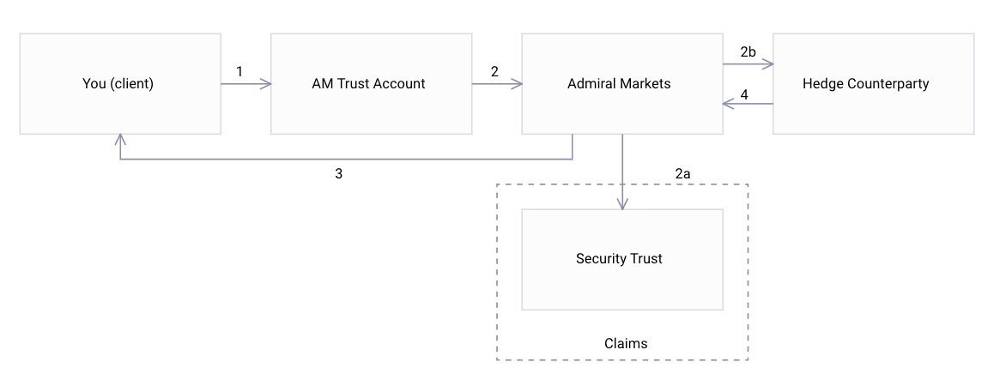
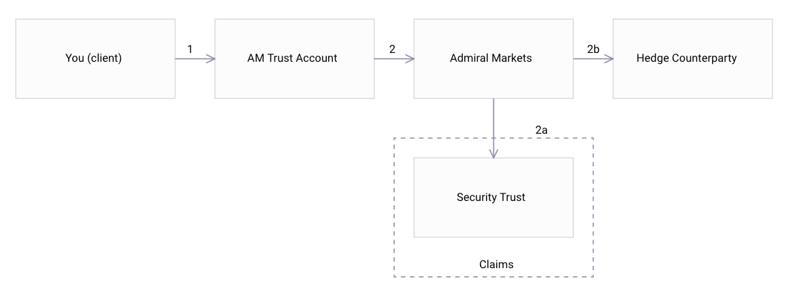
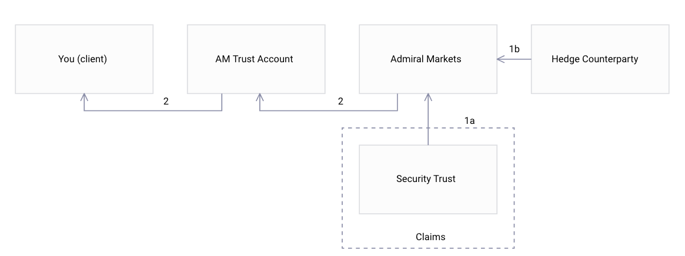
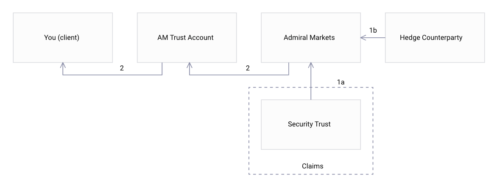

ADMIRAL MARKETS PTY LTD PRODUCT DISCLOSURE STATEMENT
Valid as of 30th of March 2020
Section 1 – Important Information
1.1 PDS
This Product Disclosure Statement (PDS) has been prepared by Admiral Markets Pty Ltd, ABN 63 151 613 839; AFSL 410 681 (hereinafter as Admiral), as the issuer of the following over the counter (OTC) Products (collectively referred to as Admiral Products):
- Spot foreign exchange currency pairs (FX);
- Commodity Derivatives (based on metals, energy, and agricultural products);
- Exchange-Traded Funds (ETFs) Derivatives;
- Equity Derivatives;
- Index Derivatives;
- Bonds Derivatives, and
- Cryptocurrency Derivatives.
All Admiral Products are traded on Admiral MT terminal and are over-the-counter-derivative financial products issued by Admiral to clients in a form of Contracts-for-Difference (CFDs). CFDs are not exchange-traded financial products. CFDs give the holder a long or short exposure to fluctuations in the price, level or value of an underlying asset and must be settled in cash.
This PDS describes the key features of Admiral Products, their benefits, risks, the costs and fees of trading in Admiral Products and other related information. Admiral Products are sophisticated financial products so you should read this PDS and the Account Terms in full before making any decision to invest in them. Please read the Key Information in Section 2 and the Significant Risks in Section 4.
This PDS is designed to help you decide whether the Admiral Products described in this PDS are appropriate for you. You may also use this PDS to compare this financial product with similar financial products offered by other issuers.
Distribution of the products under this PDS is not permitted in jurisdictions where it is illegal to make such distribution. Some expressions used in this PDS have definitions given in the Glossary at the end of this PDS (see Section 7).
1.2 Your Liability
Your potential liability is not limited to the amount paid to Admiral or that is kept by Admiral Trust Account, Wholesale Client Trust account, or the Security Trust Bank Account for you. Admiral may ask you to pay amounts in excess of those amounts to cover any shortfall.
You should carefully consider the risks of Admiral Products and your capacity to meet your liability before investing in Admiral Products.
1.3 Admiral does not give personal advice
Admiral will not give their clients personal financial advice. This PDS does not constitute a recommendation or opinion that Admiral Products are appropriate for you.
Trading in foreign exchange and derivative products carries significant risks.You can lose an amount in excess of your initial investment.
Potential investors should be experienced in OTC and derivative financial products and understand and accept the risks of investing in Admiral Products. The information in this PDS is general only and does not take into account your personal objectives, financial situation and needs. This PDS does not constitute advice to you on whether Admiral Products are appropriate for you. This PDS describes the Admiral Products which are issued to you in accordance with the Account Terms. You should read the entire PDS and the Account Terms before making a decision to deal in financial products covered by this PDS. We recommend that you contact us if you have any questions arising from this PDS or the Account Terms prior to entering into any Transactions with us. Admiral recommends that you obtain independent legal, financial and tax advice before trading.
Admiral operates on the basis that all its clients are retail clients. However, Admiral reserves the right to assess wholesale client or retail client status from time to time. If you satisfy the criteria to be classified as a wholesale client we may classify you as such. We are under no obligation to inform you if we classify you as a wholesale client but may do so as a courtesy. You must also notify us if you are funding your account with superannuation funds as that may impact your classification as wholesale or retail client.
1.4 Your Suitability to Trade Admiral Products
If Admiral asks you for your personal information to assess your suitability to trade Admiral Products and we accept your application to trade Admiral Products, this is not personal advice or any other advice to you. You must not rely on Admiral’s assessment of your suitability since it is based on the information you provide and the assessment is only for our purposes of deciding whether to open an Account for you and is separate from your decision to trade Admiral Products. You remain solely responsible for your own assessments of the features and risks and seeking your own advice on whether these Admiral Products or any particular OTC Products are suitable for you.
1.5 Changes to this PDS
A copy of this PDS, Account Terms and other respective documents can be downloaded from the website or you as the Client can call Admiral to request a paper copy of this PDS free of charge.
The information in this PDS is up to date at the time it was prepared but is subject to change at any time. Any updates will be posted on our website (www.admiralmarkets.com.au).
If the new information is materially adverse to you, we will issue either a new PDS or a supplementary PDS containing the new information. If the new information is not materially adverse to you, you will be able to view updated information on our website (at www.admiralmarkets.com.au) or by calling us using the contact details given in this document.
1.6 Contact
Admiral can be contacted at:
Admiral Markets Pty Ltd
Level 10, 17 Castlereagh Street
Sydney NSW 2000
Toll Free:
1300 889 866
Email:
Website:
Section 2 – Features. Key Information
2.1 Key Features of Admiral Products
- Admiral Products are sophisticated, high-risk, over-the-counter financial products issued by Admiral. They are not exchange-traded.
- Each Admiral Product which is agreed and entered into with you will be entered into by Admiral as principal. Admiral makes a market in its products since it regularly states the price at which it is prepared to deal with a client as principal.
- Unlike products traded on an Exchange, OTC products are not forced to have the same standardised contract specifications as the exchange traded products. The size of the Admiral Products is expressed in Lot Sizes, depending on the particular financial product traded.
- You (the Client) must fund your Account with Admiral before an Admiral Product may be issued to you. This is done by paying at least the Initial Margin.
- The Client remains liable to pay later Margin amounts and to maintain the required amount of Margin. If you (the Client) do not maintain the required Margin or do not pay the required Margin Call by the required time, your Admiral Products can be Closed Out and you (the Client) remain liable to pay for any remaining shortfall.
- There is a high degree of leverage in Admiral Products because you (the Client) pay to Admiral only Margin, not the full face value. All payments to Admiral for Admiral Products are paid as Margin, therefore the more Margin you pay, the less leverage you have.
- Admiral may apply its Negative Account Balance Policy to Negative Balances on your account in certain circumstances.
2.2 Key Benefits of Admiral Products
- Hedging: Admiral Products can be used as important risk management tools. For example, FX Products are used to hedge foreign exchange currency exposures, protect against adverse exchange rate movements and provide certainty of foreign exchange rates and cash flow. Equity Derivatives, Commodity Derivatives, and Cryptocurrency Derivative Products can give some protection against movements in the market price of the underlying asset. Index and ETF derivatives may be used to hedge or diversify risks related to investments into exchange-listed stocks.
- Speculation: Admiral Products can be used for speculation to profit from fluctuations in the underlying market, e.g., exchange rate fluctuations for FX Products or the market price of the underlying asset for Commodity Derivatives, Equity Derivatives, Index Derivatives, Bonds Derivatives, Cryptocurrency Derivatives and ETF Derivatives.
- Profit potential in both rising and falling markets:Since the markets are constantly moving, there are almost always trading opportunities, whether the market price of the underlying asset is rising or falling. There is a potential for profit (and loss) in both rising and falling markets depending on the complexity of the strategy you have employed.
- Tailored: A major benefit of entering into an Admiral Product is that the transaction is not forced to have the same standardised contract specifications as the exchange traded contracts. For example, Admiral allows you to enter into transactions in smaller amounts for example 0.01 of a Lot, whereas exchange-traded contracts are a standard size.
- Leverage: Admiral Products involves a high degree of leverage. These OTC products enable a Client to outlay a relatively small amount (in the form of Initial Margin) to secure an exposure to the full face value of the product. This leverage can work for or against you. The use of leverage can lead to large losses as well as large gains.
- Negative Account Balance Policy: Where the net balance of your accounts with Admiral has fallen below zero, you may be eligible for relief under the Negative Account Balance Policy.
2.3 Key Risks of Admiral Products
This is an outline of the key risks of investing in Admiral issued products. For a description of all of the significant risks, please see Section 4.
- Leverage – Admiral Products are highly leveraged, because the amount you pay (Margin) to Admiral is significantly less than the full face value. You should be prepared for the greater risks from this kind of leveraged investment, including being liable to pay Admiral more Margin and those Margin requirements changing rapidly in response to changes in the relevant underlying market.
- Loss of your moneys – Your potential losses on dealing in Admiral Products may exceed the amounts you pay (as Margin) for your Admiral Products, or amounts Admiral holds in Admiral Trust Account, Wholesale Client Trust or the Security Trust Bank Account for you.
- Unlimited loss – Your potential losses on Admiral Products may be unlimited.
- Limited recourse – Admiral limits its liability to you under the terms of the Admiral Products by the extent to which Admiral actually recovers against its Hedge Counterparty and allocates that to your Admiral Products. This key risk is linked to “counterparty risk”. Both limited recourse risk and counterparty risk are further explained in Section 3.19 “Your Counterparty Risk on Admiral”.
- Trust moneys are withdrawn to pay for your Admiral Products – moneys which you pay into the Admiral Trust Account or Wholesale Client Trust may not be retained in that account and can be withdrawn to pay Admiral for your Admiral Products.
- If the moneys are withdrawn as payments to Admiral, they are not retained in the Admiral Trust Account or Wholesale Client Trust for you and you (the Client) lose the benefits of holding those moneys in the Admiral Trust Account or Wholesale Client Trust. Admiral has adopted the Security Trust, described under Section 3.19 “Security Trust”.
- Margining – You (the Client) is liable to pay Margin before the Admiral Product is issued and you may be required to pay more Margin before an Admiral Product is Closed Out. Margin requirements can change rapidly. If the Client do not meet the Margin requirements, so that your account’s equity reaches a certain percentage rate of the current margin collateral (expressed in percents and referred to as ‘Stop Out’ or ‘Stop Out Level’ in the respective section of Admiral Markets website at www.admiralmarkets.com.au), any or all your open Admiral Products can be liquidated at prevailing market prices. Once a Stop Out event has been triggered, Admiral Markets reserves the right to liquidate your open Admiral Productsin an order which deems most appropriate, in its sole discretion, but usually liquidates your open Admiral Products starting from one with the largest floating loss. If the Stop Out conditions are still met after the liquidation of the first Admiral Product, then the next Admiral Product is selected for liquidation, and so forth, which may result in a consecutive liquidation of all open Admiral Products in your account.
- Foreign Exchange – You (the Client) can be exposed to rapid, significant and large changes to the value of your Trading Account if you hold Admiral Products which are denominated in foreign currency.
- Counterparty risk – you have the risk that Admiral will not meet its obligations to you (the Client). Admiral Products are not exchangetraded so you need to consider the credit and performance risk you have on Admiral and the limited recourse arrangements. For further explanation read Section 3.19 “Your Counterparty Risk on Admiral”.
2.4 Your suitability
Key suitability to considerations are:
- whether you have experience in trading the financial products which relate to the Admiral Products you choose;
- whether you understand the terms of Admiral Products and how they work;
- whether you understand the concepts of leverage, margins and volatile markets and prices;
- whether you accept a high degree of risk in trading in Admiral Products;
- whether you understand that the nature of trading in OTC financial products such as Admiral Products do not provide investors with interests or rights in the underlying financial products which relate to the Admiral Products;
- whether you understand the processes, technologies and terminology used in trading Admiral Products;
- whether you can monitor your investments in Admiral and manage them in a volatile market;
- whether you can manage the risks of trading in Admiral Products;
- whether you have financial resources to provide more Margin, especially on little or no notice; and
- whether you can bear substantial losses that might arise from trading in Admiral Products, especially the potentially unlimited losses on dealing in short Admiral Products.
Admiral’s assessment of you (the Client’s) suitability is based on the information given by you. Admiral’s policy includes assessing the information given to us by your online responses, by email, telephone or in meetings. Admiral may keep the information given to them by you (the Client) to help monitor our policy and for the requirements of a financial services licensee.
As a result of this assessment Admiral might limit some features for your Account.
Admiral’s assessment of you (the Clients)suitability to trade in Admiral Products and any limits that were set for your Account (or later change to those limits) should not be taken as personal advice to trade in Admiral Products nor does it imply that Admiralis responsible for any losses incurred by you (the Client) for trading in Admiral Products.
To the extent permitted by law, Admiral does not accept liability for a client’s choice to invest in any Admiral Products. Therefore you should carefully read all of this PDS, consider your own needs and objectives for investing in these Admiral Products and take independent advice where and when needed as you see fit.
Even if Admiral assesses you as suitable to commence trading Admiral Products, we urge you to use our Demo accounts to ensure you are familiar with the terminology of Admiral Products and how they work.
2.5 Nature of Admiral Products
When buying an Admiral Product the terms of any payment when it is Closed Out reflects the performance of an Underlying Reference Instrument that you have chosen including, among others, foreign exchange, spot precious metals, equities and energy futures.
The amount of profit or loss is determined by the difference between the price at which the Admiral Product is bought and the price at which it is Closed Out, adjusted to reflect interest payments or Swap charges (section3.18 Swaps/Rollovers), or any other charges where applicable (As described in Section 5). Important:Note no physical delivery of either the Admiral Product or the Underlying Reference Instrument takes place.
Admiral Products are tailored by Lot sizes and do not have the same standardised contract specifications as exchange-traded contracts. The terms of Admiral Products are based on the Account Terms with Admiral, which apply to you (the Client’s) Trading Account(s) and your Admiral Products.
All Admiral Products traded on the Admiral MT Terminal are subject to Margin requirements, which means you (the Client) are required to pay to Admiral at least the minimum required Margin.
Essentially, the amount of any realised profit or loss made on the Admiral Product will be equal to the net of:
- the difference between the Transaction Price of the Admiral Products when the Transaction is opened and the Transaction Price of the Admiral Products when the Transaction is Closed Out, multiplied by the Lots traded and the standard volume size per (1.00 Lot);
- for all Admiral Products, any rollover/ swap Fee;
- any adjustments made in respect of the Equity Derivatives, Exchange-Traded Funds Derivatives and Cash Index Derivatives (e.g., for dividends or taxes);
- any Transaction Fees payable in respect of the Admiral Products and any other charges (for more information on Fees and Charges see Section 5 of this PDS).
Your Equity will also be affected by other amounts you must pay in respect of your Account such as Finance Charges on your Account and conversion costs (for more information on costs, fees and charges in respect of your Account, see Section 5 of this PDS).
2.6 Types of Trading Accounts offered by Admiral
2.6.1 Trade.MT4 Trading Account
Trade.MT4 Accounts offer five (5) digit quoting on FX Products and Straight-through Processing (‘STP’) on aggregated prices of banks, investment firms and other venues such as Electronic Communication Networks (‘ECNs’) on the foreign exchange and other derivatives that are based on commodities,equity index bonds,and cryptocurrency.
Trade.MT4 accounts also offer access to pricing on foreign equity derivatives from various trading venues, including, but not limited to, liquidity providers with specialisation on equity derivatives.
Since the foreign exchange market is predominantly unregulated, there is no central exchange for foreign exchange and trading is performed on an “Over the Counter” (OTC) market.
Specifically, the underlying cryptocurrencies market is largely unregulated to the date and encompasses some OTC features such as absence of a central exchange and any reliable source of the benchmark price.
The Account Terms and trading conditions (for example the minimum deposit and leverage for the financial products offered) relating to the Trade.MT4 Accounts are available on: www.admiralmarkets.com.au or you can download a demo account.
2.6.2 Zero.MT4 and Zero.MT5 Trading Accounts
Zero.MT4 and Zero.MT5 Accounts offer five (5) digit quoting and a wider range of available FX Products. These account types are designed for clients most interested in trading in foreign exchange currency pairs. Spreads on FX Products in Zero.MT4 and Zero.MT5 accounts start from 0 points, however, every trade is charged commission, being a percentage of the notional trade value. Zero.MT4 and Zero.MT5 accounts also feature a few metal derivative products.
The Account Terms and trading conditions (for example the minimum deposit and leverage for the financial products offered) relating to the Zero.MT4 and Zero.MT5 Accounts are available on: www.admiralmarkets.com.au or you can download a demo account.
2.6.3 Trade.MT5 Trading Account
Trade.MT5 Accounts offer the widest selection of Admiral Products. This Trading Account may be accessed only via Admiral MT Terminal MetaTrader 5 (web, desktop or mobile versions). MetaTrader 5 is the newest Admiral MT Terminal designed specifically for clients looking for a diversity of accessible markets.
The Account Terms and trading conditions (for example the minimum deposit and leverage for the financial products offered) relating to the Trade.MT5 Accounts are available on www.admiralmarkets.com.au or you can download a demo account.
2.7 Admiral Products
The Admiral Products available on the Zero.MT4 and Zero.MT5 Trading Accounts are limited to FX Product, metals and cash index derivatives. Trade.MT5 Trading Account offers the widest selection of Admiral Products. Trade.MT4 Trading Account offers access to all Admiral Product types (except for ETF Derivatives), however the number of accessible particular Equity, Commodity and Cryptocurrency derivative products is less in comparison to Trade.MT5 Trading Account.
2.7.1 Spot FX Product
A Spot FX Product is an OTC agreement to exchange an amount in one currency for an amount in another currency at an Exchange Rate agreed on the day of the trade. Trading FX Products, a combination of two currencies are traded (known as a currency pair). A FX Product is opened by buying an Admiral Product which is based on either buying or selling the Base Currency (no physical delivery ever takes place).
Example: When choosing USDJPY currency pair, you would be buying USD by selling JPY, whereas if you were selling USD/JPY you would be selling JPY and buying USD.
The minimum Lot size on Trade.MT4 and Trade.MT5 accounts is 0.01 Lot (step 0.01 Lot(s)), with 1 Lot being equivalent to 100,000 units of Base Currency.
The minimum Lot size on Zero.MT4 and Zero.MT5 accounts is 0.01 Lot (step 0.01 Lot(s)), with 1 Lot being equivalent to 100,000 units of Base Currency.
FX Products traded on the Admiral MT Terminal cannot be settled by the physical or deliverable settlement of the currencies on their Value Date; rather, these financial products can be rolled or swapped indefinitely until you decide to close out the Transaction. For further details refer to the Section 3.18 “Swap/Rollover” and for the relating fees and charges refer to the Section 5.4 “Finance Charge Adjustment/ Finance Credit Adjustment”.
2.7.2 Commodity Derivatives
Commodity Derivative Products include several products from three main underlying commodity classes: metals, energy and agriculture.
Commodity Derivative Products are OTC agreements with Admiral settled in cash by reference to buying or selling a certain quantity of a particular commodity at the price agreed on time traded against currency (typically against the US dollar). Due to the nature of OTC agreements, such Commodity Derivative Products traded on a bilateral basis with Admiral cannot be settled by the physical or deliverable underlying assets.
If Commodity Derivatives are described on Admiral’s website as futures contracts, such Commodity Derivatives have set Expiry Dates, upon or after which the position will be Closed Out automatically.
If Commodity Derivatives are described on Admiral’s website as spot contracts or cash contracts, such Commodity Derivatives do not expire and can be rolled indefinitely until you decide to close out the Transaction.
The list of available Commodity Derivatives Products and relevant detailed contract specifications (for example the minimum contract size and trading schedule) are available on: www.admiralmarkets.com.au
2.7.2.1 Spot Metal Derivatives
A Spot Metal Product is an OTC derivative agreement settled in cash by reference to buying or selling gold and silver at the Spot price agreed on the day traded against the US dollar.
A Metal Product is opened by either buying or selling by reference to the Spot metal traded against USD or another currency. For example if you were buying XAUUSD (an instrument described on our website as gold versus US dollar), you would be buying gold derivative by selling a reference amount of USD, whereas if you were selling XAGUSD (an instrument described on our website as silver versus US dollar), you would be selling silver derivative by buying a reference amount of USD.
The minimum contract size for gold spot is 0.1 Lot (step 0.1 Lot) with 1 Lot being equivalent to 100 ounces of gold.
The minimum contract size for silver spot is 1.0 Lot (step 1.0 Lot) with 1 Lot being equivalent to 5000 ounces of silver.
Spot Metal Products traded on the Admiral MT terminal cannot be settled by the physical or deliverable settlement of the spot metals on their Value Date, rather these products can be rolled or swapped indefinitely until you decide to close out the Transaction. For further details refer to Section 3.18 “Swap/Rollover” and for the relating fees and charges refer to the Section 5.4 “Finance Charge Adjustment/Finance Credit Adjustment”.
2.7.2.2 Spot Energy Derivatives
Energy Derivatives are an easy way to access indirectly commodities markets, such as oil and gas. Energy Derivatives give traders and investors indirect exposure to the underlying commodity without physical delivery, with the trading features of an Admiral Product being a simple alternative to directly trading in the exchange traded futures contract for those commodities.
All Energy Derivatives will be cash settled.
Instead of directly trading on the futures Exchanges – with sometimes prohibitive contract sizes and high collateral requirements – investors can access leveraged commodity trading with reduced initial investment through Energy Derivatives. For instance, the Energy Derivative minimum Lot size of 0.1 of a Lot of US Crude Oil is equivalent to 10 barrels of the underlying commodity, compared with the relevant Exchange’s minimum futures contract trade size of 1 contract equivalent to 1,000 barrels of the underlying commodity, which means easier and more flexible trading.
If Energy Derivatives are described on Admiral’s website as futures contracts, such Energy Derivatives have set Expiry Dates, upon or after which the position will be Closed Out automatically.
If Energy Derivatives are described on Admiral’s website as spot contracts, such Energy Derivatives do not expire and can be rolled indefinitely until you decide to close out the Transaction.
None of the Energy Derivatives will incur any overnight Financing Charge Adjustment except the cases described further in clause 5.4.
2.7.2.3 Spot Agricultural Commodity Derivatives
Agriculture Derivative Products allow Admiral Clients to indirectly access markets of agricultural products, such as cotton, coffee, and sugar. Instead of trading large contract sizes and paying high margins on the futures exchanges investors may gain leveraged exposure to agricultural commodity instruments with reduced initial margin requirements through Agriculture Derivative Products offered by Admiral.
For instance, the SUGAR.WHITE (an instrument described on our website as white sugar versus US dollar) minimum Lot size of 1 is equivalent to 10 tonnes of white sugar, compared with the relevant Exchange’s minimum futures contract trade size of 1 contract equivalent to 50 Tonnes of white sugar. This allows Admiral Clients for more flexibility and precision in the execution of their trading strategies.
All agricultural commodity derivatives will be cash settled.
2.7.3 Equity Derivatives
Equity Derivatives are OTC agreements which derive their price from the fluctuations of the price of the Underlying Reference Instrument on the relevant Exchange or market.
Prices are only quoted for Equity Derivatives and can only be traded during the open market hours of the relevant Exchange on which the Underlying Reference Instrument is traded or within any additional limited hours set by Admiral from time to time.
Admiral might not quote for an Equity Derivative for a particular Underlying Reference Instrument if that Underlying Reference Instrument is illiquid or is in suspension (for more information refer to Market Disruptions in Section 4). Furthermore, Admiral might not quote Equity Derivatives if the Equity Derivative is over shares in a company which becomes externally administered. These features may occasionally raise significant risks to you (the Client) for further details refer to Section 4.
Equity Derivatives allow you to receive economic benefits similar to those from directly owning the Underlying Reference Instrument on which the Equity Derivative is based without physically or legally owning it (for more information on benefits of trading in Admiral Products refer to Section 2 under “Key Benefits of Admiral Products” of this PDS).
Admiral currently offers Equity Derivative products derived from the securities of approximately 3000 of the largest capitalized companies that are listed on more than 10 world’s most prominent stock exchanges in the USA and the EU. Further details, regarding which Equity Derivatives Admiral provides quotes, refer to the Admiral Market website www.admiralmarkets.com.au; download a Demo trading platform or contact Admiral directly. The available Equity Derivatives may change at times due to market conditions, Exchange rules and any limits set by Admiral.
The minimum Lot size for the US Equity Derivative Product is 1.0 Lots (step 1.0 Lots) with 1 Lot being equivalent to 1 unit of the Underlying Reference Instrument.
Equity Derivatives do not have an expiry date and will remain open until Closed Out- refer to the Section 5.4” Finance Charge Adjustment / Finance Credit Adjustment” for the fees and charges relating to keeping the position open.
2.7.4 Cash Index Derivatives
Trading in respect of movements in indices allows you to gain indirect exposure to a large number of different shares in one single transaction. Index Derivatives can also be used to take positions on the direction of a whole market without taking a view on the prospects for any particular company’s shares.
Index Derivatives derive their price from the real time fluctuations in the value of the index which makes up the Underlying Reference Instrument for the Admiral Product, as calculated by the relevant Exchange or index sponsor, as the case may be for each particular index or, if that is not available, Admiral’s determination of the index level.
Similar to Equity Derivatives, prices are normally only quoted for Indices and can only be traded during the open market hours of the relevant Exchange or index sponsor or within any additional limited hours set from time to time by Admiral).
When trading on futures Exchange, it is important to remember that the current price of the underlying futures contracts will not normally be the same as the price of the underlying index.
Indices allow you to trade anticipated market trends rather than individual shares or other financial products. In addition, Margin requirements for Indices are typically lower than for Equity Derivatives.
The minimum contract size is 0.1 Lot (step 0.1 Lot).
Refer to the Section 5.4 ”Finance Charge Adjustment / Finance Credit Adjustment” for fees and charges relating to keeping the position open.
Index Derivatives in Admiral MT Terminal are mostly available in a form of Cash Index Derivative. Appropriate indication if the particular Index instrument is cash or futures-based derivative is posted in the Instrument description under Relevant Trading Account page on: www.admiralmarkets.com.au
Unlike index futures based instruments; Cash Index Derivatives do not expire. Both cash and futures type indices cannot be settled by the physical or deliverable settlement on their Value Date, rather these products can be rolled or swapped indefinitely until you decide to close out the Transaction.
Cash Index Derivatives are subject to the effect of corporate actions of prospects forming up related underlying index such as dividend payouts. When an individual stock which is a constituent of a cash index goes ex-dividend, this will have a weighted effect on that cash index, known as the “index dividend” or “index impact”.Admiral will make adjustments to those accounts with a position in an affected index, if that position is open the end of daily trading session on the day prior to the ex-dividend date. Admiral will credit long positions and debit short positions (by means of a cash adjustment) as follows:
Index dividend x position size
The weighted effect of an individual stock’s dividend is calculated as follows:
Index Dividend = Share Dividend x (Shares in index / Index Divisor)
The “Index Divisor” varies from index to index, it is a value which is adjusted by the underlying exchange to offset the effect of changes resulting from, but not limited to, stock splits, bonus issues and constituent substitutions. This allows the index value to remain comparable over time. Admiral uses various data providers in determining its calculation of the index dividend.
The DAX 30 cash index is not subject to adjustments; it is a total return index and as such all ex-dividends is automatically reflected in the price.
Futures based indices are not affected by ex-dates and dividend payouts as anticipated future dividends are already priced in to the market.
2.7.5 ETF Derivatives
ETF Derivatives are OTC agreements which derive their price from the fluctuations of the price of the Underlying Reference Instrument - an exchangetraded fund.Similar to Equity and Index Derivatives, prices are only quoted for ETF Derivatives and can only be traded during the open market hours of the relevant Exchange on which the underlying reference ETF instrument is traded.
ETF Derivatives allow you to trade anticipated market or sector trends rather than individual shares or other financial products.
Admiral might not quote for an ETF Derivative for a particular Underlying Reference Instrument if that Underlying Reference Instrument is illiquid or is in suspension. Furthermore, Admiral might not quote, or stop quoting without any prior notice to clients, any ETF Derivative product if such ETF Derivative is over shares of and exchange-traded fund which enters into liquidation or becomes subject to delisting from a relevant exchange market. These features may occasionally raise significant risks to you (the Client). For more information refer to Market Disruptions in Section 4.
The minimum contract size for ETF Derivatives is 1 Lot (step 1 Lot) with 1 Lot being equivalent to 1 unit of the Underlying Reference Instrument.
ETF Derivatives do not have an expiry date and will remain open until Closed Out- refer to the Section 5.4” Finance Charge Adjustment / Finance Credit Adjustment” for the fees and charges relating to keeping the position open.
2.7.6 Bonds Derivatives
Bonds Derivatives are OTC agreements which derive their price from the fluctuations of the price of the Underlying Reference Instrument on the relevant Exchange or market.
All Bonds Derivatives will be cash settled.
Prices are only quoted for Bonds Derivatives and can only be traded during the open market hours of the relevant Exchange on which the Underlying Reference Instrument is traded or within any additional limited hours set by Admiral from time to time.
The minimum Lot size on Admiral.Markets account is 1.0 Lot (step 1.0 Lot(s)), with 1 Lot being equivalent to 100 units of the Underlying Reference Instrument.
Bonds Derivatives in Admiral MT Terminal are mostly available in a form of futures-based derivative. Appropriate indication if the particular Bonds instrument is cash or futures-based derivative is posted in the Instrument description under Relevant Trading Account page on: www.admiralmarkets.com.au
If Bonds Derivatives are described on Admiral’s website as futures contracts, such Bonds Derivatives have set Expiry Dates, upon or after which the position will be Closed Out automatically, with cancellation of all active pending orders. The expiry date of the current futures-based derivative Instrument can be also found in the Instrument description on Admiral’s website.
If Bonds Derivatives are described on Admiral’s website as futures contracts, such Bonds Derivatives do not allow you to receive any additional economic benefits similar to those from directly owning the Underlying Reference Instrument on which the Bonds Derivative is based, such as coupon payments.
Unlike futures contracts traded on relevant exchanges, Bonds Derivatives offered by Admiral may not have fixed requirements for initial and maintenance margin, and can be traded on the leverage basis as described further in clause 5.7.
None of the Bonds Derivatives will incur any overnight Financing Charge Adjustment except the cases described further in clause 5.4.
2.7.7 Cryptocurrency Derivatives.
Cryptocurrency Derivatives enable an indirect access for trading the cryptocurrency assets, such as Bitcoin or Ripple. Cryptocurrency Derivatives give traders and investors indirect exposure to the underlying cryptocurrency assets without physical delivery.
Instead of trading directly via cryptocurrency exchange venues – which involves counterparty risks, since these venues are largely unregulated, as well as risks loss of funds in result of hacking – traders and investors can access leveraged trading in Cryptocurrency Derivative products issued by Admiral, with the benefit of trading with a regulated entity and without the need for a specialized software such as wallets, cold storage devices and any other infrastructure elements required for direct operations with cryptocurrencies.
All clients are advised to read the contract specifications related to the Cryptocurrency Product in the relevant section of the Admiral website at www.admiralmarkets.com.au to figure out the parameters of the offered product and its distinct differences from the respective underlying assets.
For example, the Bitcoin Derivative minimum lot size of 0.1 of a lot of Bitcoin vs US Dollar CFD is equivalent of 0.1 of the value of 1.0 units of the underlying cryptocurrency asset Bitcoin (BTC or XBT) expressed in US Dollars, which means that the minimum fraction of the Bitcoin (so-called ‘Satoshi’ or 0.00000001 BTC) is not supported by Admiral.
The maximum trade size of the Cryptocurrency Derivative may be limited at the fixed amount of lots – e.g. 3.0 lots BTCUSD; additionally, the maximum notional value of all open positions in Cryptocurrency Derivative products may be limited at a fixed level – e.g. 10’000 EUR or equivalent in another deposit currency.
The limitations currently applied to the Cryptocurrency Derivative product are intended for protection of clients from the excess volatility of the underlying assets and from additional degree of slippage which may occur in result of execution of larger orders on ‘thin’ markets.
A Cryptocurrency Derivative product is opened by either buying or selling by reference to the underlying asset price derived from the cryptocurrency exchange venue against USD or another currency. For example, when you were buying BTCUSD (Bitcoin vs US Dollar), you would be buying Bitcoin derivative by selling a reference amount of USD, whereas if you were selling BTCUSD, you would be selling Bitcoin derivative by buying a reference amount of USD.
Admiral has discretion to apply short sale restrictions to some of the Cryptocurrency Derivatives, which means that such instruments can be only used with Buy, Buy Stop and Buy Limit orders to open a new position, and Close, Take Profit and Stop Loss to close a position
Cryptocurrency Derivatives traded on the Admiral MT terminal cannot be settled by the physical or deliverable settlement, rather these products can be rolled indefinitely until you decide to close out the Transaction. For further details refer to Section 3.18 “Swap/Rollover” and for the relating fees and charges refer to the Section 5.4 “Finance Charge Adjustment/Finance Credit Adjustment”.
2.8 Benchmark Disclosure
ASIC has introduced benchmarks for over-the-counter derivatives which include OTC margin foreign exchange financial products. While it is not clear that ASIC’s benchmarks apply to any or all of the Admiral Products, Admiral has chosen to apply the benchmarks to all of the Admiral Products.
It is important to note that the benchmarks are not mandatory and are not law. ASIC has introduced them by way of stating in Regulatory Guide 227 ASIC’s expectations. Not meeting the benchmarks is not an indication of breaches or failures. Rather, the benchmarks in RG 227 also require prominent disclosure in a PDS as to whether an issuer meets the benchmarks or, if not, the reasons why they are not met are explained in the PDS. ASIC states in its RG 227 that it should also apply to margin foreign exchange financial products and comparable financial products but without describing any further how that actually applies.
The following table summarises the benchmarks as Admiral applies them to Admiral Products, whether Admiral meets them and, if not, why not.The table also refers you to other Sections of this PDS for more information on relevant topics (to avoid duplicating the information in this PDS).
|
ASIC RG 227 Benchmark |
Admiral |
|
1. Client qualification If an issuer meets thisbenchmark, the PDS should clearly explain:
and
|
Admiral believes that it meets this benchmark. Please see Section 2.4 “Your Suitability”. |
|
2. Opening collateral If an issuer meets this benchmark, the PDS should explain the types of assets the issuer will accept as opening collateral. If an issuer accepts non-cash assets as opening collateral (other than credit cards to a limit of $1000), the PDS should explain why the issuer does so and the additional risks that using other types of assets (e.g. securities and real property) as opening collateral may pose for the investor. This includes, for example, the risks of ‘double leverage’ if leveraged assets are accepted as opening collateral |
Admiral does not meet this benchmark because it accepts as collateral for opening the account payments by credit card for more than $1,000. Funding an Account by credit card has additional risks and costs for the Client. By using these payment methods the client would effectively be doubling their leverage by taking credit from their credit card account and trading with leverage on their Admiral Account. This can add to the risks and volatility of their positions as well as incurring higher interest costs on their credit card account. If clients lose on their Admiral Products, they might not have other financial resources to repay their credit card account, incurring higher interest costs and possibly defaulting on their credit card terms. Although Admiral accepts payments of more than $1,000 from credit card accounts to fund the clients Account and to meet later Margin payments, the client should carefully consider whether this payment method is suitable for their trading and limit it to what they can afford. Admiral Markets does not impose a limit on the amount of credit card funding a client can use because it recognises that different clients have different funding requirements that are specific to their needs.Admiral Markets do not provide personal financial product advice which takes into account the clients personal circumstances.What the client as an investor does in relation to credit card funding is entirely up to them. Admiral Markets does not take securities or real property as collateral. Admiral otherwise meets this benchmark. |
|
3. Counterparty risk - Hedging If an issuer meets this benchmark, the PDS should provide the following explanations:
If an issuer does not meet this benchmark, it should disclose this in the PDS and explain why this is so. The PDS must include information about the significant risks associated with the product: s1013D(1)(c). The PDS should also provide a clear explanation of the counterparty risk associated with OTC Admiral Products. The PDS should explain that, if the issuer defaults on its obligations, investors may become unsecured creditors in an administration or liquidation and will not have recourse to any underlying assets in the event of the issuer’s insolvency. |
Admiral would meet this benchmark because:
|
|
4. Counterparty risk - Financial resources If an issuer meets this benchmark, the PDS should explain how the issuer’s policy operates in practice. If an issuer does not meet the requirement on stress testing, it should explain why and what alternative strategies it has in place to ensure that, in the event of significant adverse market movements, the issuer would have sufficient liquid resources to meet its obligations to investors without needing to have recourse to client money to do so. An issuer should also make available to prospective investors a copy of its latest audited annual financial statement, either online or as an attachment to this PDS. |
Admiral believes it meets this benchmark:
|
|
5. Client money If an issuer meets this benchmark, the PDS should clearly:
If an issuer does not have such a policy in place, or a policy that does not incorporate all of the elements described above, it should disclose this in the PDS. If an issuer’s policy allows it to use money deposited by one client to meet the margin or settlement requirements of another client, it should very clearly and prominently explain this and the additional risks to client money entailed by this practice. An issuer’s client money policy should be explained in the PDS in a way that allows potential investors to properly evaluate and quantify the nature of the risk, if any, to client money. |
Admiral believes it meets this benchmark in all respects. Since client moneys may be withdrawn to pay Admiral, it is not legally appropriate to describe the use of money deposited by one Client to meet the margin or settlement requirements of another Client; however to the extent permitted by the Australian Client Money Rules, certain Client moneys are withdrawn to meet the hedge contract transactions of Admiral, including margin obligations, on a net basis (without reference to specific Client transactions). The features and risks of this are clearly and prominently explained in this PDS as are the additional risks to client money arising by these features. Retail and sophisticated investor client money is not used to margin, guarantee, secure, transfer, adjust or settle dealings in derivatives for Admiral or on behalf of people other than the client. In addition, Admiral has adopted a structure that it believes benefits its Clients by way of adopting the Security Trust – see Section 3.19“Your Counterparty Risk on Admiral” and in particular under the sub heading “Security Trust”. |
|
6. Suspended or halted underlying assets If an issuer meets the benchmark, the PDS should explain the issuer’s approach to trading when underlying assets are suspended or halted. If an issuer does not meet this benchmark, it should disclose this in the PDS and explain why this is so, as well as the additional risks that trading when underlying assets are suspended may pose for investors. To provide a full explanation of this aspect of the product, an issuer should explain any discretions it retains as to how it manages positions over halted or suspended assets, and how it determines when and how it uses these discretions. This should include disclosure of any discretions the issuer retains to:
|
Admiral believes it meets this benchmark in all respects. In relation to trading when underlying assets are suspended or halted the following (as seen in Section 6.2 “Discretions”) will apply Admiral’s significant discretions are:
When exercising discretions Admiral will comply with their legal obligations as the holder of an Australian Financial Services Licence. We will have regard to our policies and to managing all risks (including financial, credit and legal risks) for ourselves and all of our Clients, our obligations to our counterparties, market conditions and our reputation. Admiral will try to act reasonably in exercising our discretions but are not obliged to act in the best interest of you (the Client) or to avoid or minimise a loss in your Account. These discretions can come into force at any time including during normal market conditions as well as when the underlying asset is suspended or halted on the physical exchange. Additional information on Admiral’s approach to opening and closing positions that relate to these discretions on suspended or halted trading on underlying assets are described in Section 3.2 and 3.3. |
|
7. Margin calls If an issuer meets this benchmark, the PDS should explain the issuer’s policy and margin call practices. If an issuer does not have such a policy in place, or one that does not incorporate all of the elements described above, it should disclose this in the PDS and explain why this is so. To provide full and accurate information about this aspect of trading in Admiral Products, the PDS should clearly state that trading in Admiral Products involves the risk of losing substantially more than the initial investment. This will ensure the issuer meets its obligation to include in the PDS information about the significant risks associated with the product:s1013D(1)(c). |
Admiral does not meet this benchmark in certain respects. Admiral describes its margin policy Section 3.14 “Payments and Client Moneys” subheading “margin Policy “and the risks associated in Section 4. Admiral does not commit to taking any reasonable steps to notify investors before making a Margin call because that is contrary to the Account Terms and, if it applied, would tend to have a worse financial effect for all Clients generally, since they could all suffer adverse price movements while waiting for an undefined reasonable notice period, that may only later be decided after lengthy and costly legal proceedings. Admiral might attempt to contact Clients, but the Account Terms clearly require the Client (i) to maintain the required minimum Margin Cover as well as (ii) to meet any Margin call.A Client must meet the Margin Cover requirements whether or not the Client is aware of the current Margin Cover. A Client must meet a Margin call even if they have not actually received the Margin call made to the address they gave Admiral. |
Section 3 – How to Trade
3.1 Your Account
You need to establish your Account by completing Admiral’s Account application form, which will be made available for you by contacting Admiral directly or by registering online via the website www.admiralmarkets.com.au.
After completing the registration process, your personal Trader’s Room profile will be created. Within the Trader’s Room you can perform many functions including opening a real or demo Trading Account(s), choosing the Account Currency and manage money operations.
In order to open a real MT Trading Account you will need to go to the “Account Management” section of your Trader’s Room and fill in the online form. After completion and once Admiral accepts your application, your real Trading Account will be established and you will receive your unique login and password details. Simply download the Admiral MT Terminal in the “Software” section of your Trader’s Room or from the Admiral website, install it on your PC, run the terminal and enter your login data in order to begin trading. Your Account covers all of the services and products which you apply for in your application form and which are accepted by Admiral.
By opening a Trading Account, you agree to the Account Terms. Your Account Terms set out the legal terms governing your Account and your dealing in Admiral Products.
3.2 Opening an Admiral Product
The particular terms of each Admiral Product are agreed between you (the Client) and Admiral before entering into the Transaction.
Before entering into an Admiral Product, Admiral will require you to have sufficient Equity (as defined in the Glossary in Section 7) to satisfy the Initial Margin requirement for the relevant Lots of Admiral Products you wish to acquire.
All of the payments which you (the Client) make to Admiral are applied as Margin (and, if fees and charges are due, the actual Margin amount credited to your Trading Account will be an amount net of those fees and charges). The fees and charges for transacting Admiral Products with Admiral are set out in Section 5.1 of this PDS.
An Admiral Product is opened with the specifications for either buying (going long) or selling (going short). You go “long” when you buy an Admiral Product in the expectation that the price of the Underlying Reference Instrument to which the Admiral Product is referable will increase, You go “short” when you buy an Admiral Product in the expectation that the price of the Underlying Reference Instrument to which the Admiral Product is referable will decrease, You do not “sell short” the actual Admiral Product – it is the specifications of the Admiral Product that have the long or short trading conditions.
(References to “selling” an Admiral Product are a short hand, common sense way of referring to buying an Admiral Product opposite to the one you have in order to close it out.)
3.3 Closing Out Admiral Products
Admiral Products, except futures based Energy Derivatives, futures based Index Derivatives and futures based Bonds Derivatives that have a set maturity date, do not expire or have a fixed term of existence, therefore must be Closed Out by you (the Client) or rolled into the next contract month prior to expiry otherwise the contract will be Closed Out by Admiral.
Admiral Products cannot be settled by physical or deliverable settlement of the Underlying Reference Instrument on the Value Date and will be continuously rolled or swapped until they are Closed Out.
If you (the Client) wish to close out an Admiral Product before it expires and for the Open Positions to be ‘netted out’, you must select the Open Order with the view to closing the existing Admiral Product position (or part of it) at the Transaction Price quoted.
If, instead, you trade an equal and opposite Admiral Product to the open Admiral Product, each position will generate a floating (unrealised) profit or loss and will not be ‘netted out’. However you (the Client) should be aware that by not netting out positions additional fees and charges will be incurred since both positions would be treated as Open Positions. At the same time, opening such opposite Admiral Products may not incur increased Margin requirements, as only a half of the initial margin is typically required by Admiral for every Admiral Product while the same Admiral Product is opened in an opposite direction in the same amount of Lots. Margin requirements incurred in such occasions are referred to as Hedged Margin and can be found in the relevant section of the website www.admiralmarkets.com.au.
Profits and/or losses are realised if positions have been Closed Out. Profits and/or losses are unrealised if only one side of the transaction has been completed i.e. it remains an Open Position.
The amount of any profit or loss you make on an Admiral Product will be based on the difference between the amount paid for the Admiral Product when it is issued (including fees and charges) and the amount credited to your Trading Account when the Admiral Product is Closed Out (including allowance for any fees and charges).
Any profit or loss net of any fees and charges will be credited/ debited to your Equity in the Account Currency selected - refer to Section 6.1 under “Account Currency”.
At the time that the Admiral Product is Closed Out, Admiral will calculate the remaining payment rights and obligations. Since you (the Client) are required to enter into an Admiral Product to close out the existing OTC Product, there may be a Transaction Fee on the Admiral Product used to close the position – see Section 5.1 “Costs, Fees and Charges”.
In volatile markets the Transaction Price quoted to you (the Client) may not be available by the time that you chose to accept the price offered and you (the Client) may require another quote.
In order to provide the Admiral Products in an efficient and low-cost manner, Admiral has discretion in determining closing Transaction Prices.
In general, without limiting Admiral’s discretion, it should be expected that Admiral will act reasonably and have regard to a range of relevant factors at the time, such as the value of the hedge contract taken by Admiral to hedge its Admiral Product issued to you (the Client), the closing price of the Admiral Product and any foreign currency exchange rates which are relevant due to the denomination of your Admiral Products or Trading Accounts. Admiral also has the right to decide to make an adjustment in any circumstance if Admiral considers an adjustment is appropriate. Admiral has a discretion to determine the extent of the adjustment so as to place the parties substantially in the same economic position they would have been in had the adjustment event not occurred.
Admiral may elect to Close Out a position without prior notice to you (the Client) if an adjustment event occurs and it determines that it is not reasonably practicable to make an adjustment.
Although there are no specific limits on Admiral’s discretions, Admiral must comply with its obligations as a financial services licensee to act efficiently, honestly and fairly.
3.4 Dealing
Quotes for Transaction Prices for dealing in Admiral Products are indicative only and so are subject to the actual price at the time of execution of your Transaction. There is no assurance that the Admiral Product will actually be dealt with at the indicative quote. You (the Client) have a risk in price movement until the trade is made.
Quotes are normally only given and transactions made on Admiral Products, excluding FX Products and Metals Products, during the open market hours of the relevant Exchange on which the Underlying Reference Instruments are trading. The trading hours of the relevant Admiral Product relating to the type of Admiral Trading Account are available on the Admiral website by selecting the relevant Admiral Trading Account & Admiral Product or by contacting Admiral.
Occasionally, Admiral may, within its discretion, impose limited trading hours.
Admiral may at any time in its discretion without prior notice impose limits on Admiral Products in respect of particular Underlying Reference Instruments. Ordinarily Admiral would only do this if the market for the particular Underlying Reference Instrument has become illiquid or its trading status has been suspended or there is some significant disruption to the markets including trading facilities or the company has become externally administered.
You (the Client)should be aware that the market prices and other market data which you view through Admiral’s online trading platforms or other facilities which you (the Client) arrange yourself may not be current or may not exactly correspond with the Transaction Prices for Admiral Products Asked or dealt by Admiral.
Accessing your Accounts and any online trading platform outside of the hours when live Orders may be accepted on the relevant market, you should be aware that the Orders may not be accepted until the relevant market is open to trading, by which time the current prices might have changed significantly.
Trades cannot be executed below set minimum trade sizes expressed as a portion of a lot for example 0.01 Lot. The minimum trade size available for each Admiral Product is displayed when the Order is placed for the Admiral Product selected on the order ticket on the Admiral MT Terminal Platform or the information is available on the Admiral website.
3.5 Spread
When requesting a price quote for Admiral Products you will notice that there is a Bid Price and an Ask Price (collectively ‘the quotes’) being a lower and higher price at which you can place your Order. The difference between the Bid Price and Ask Price is termed the Spread and it provides an indication of where you can buy Admiral Products at, being the higher price, and where you can “sell” Admiral Products at, being the lower price (see comment above, in Section 3.2 “Opening an Admiral Product”, on what is meant by “selling”).
Admiral makes hedge contracts at or around the same time as it issues the Admiral Product to you (the Client) by placing a corresponding hedge contract with its Hedge Counterparty, being its related entity Admiral AS. The Hedge Counterparty may hedge directly into the market or it may make a market itself in its hedge contract made with Admiral.
At any time, this Bid Price (sell price) represents the best current price at which you can sell Admiral Products and the “offer” or Ask Price (buy price) represents the best current price at which you can buy Admiral Products at that time in a Transaction with Admiral, subject to price movements up to the time of actual execution.
The spread that you will be actually quoted is displayed on the order ticket when your Order is placed on your Admiral MT Terminal. An indication of the spread that you will be quoted for the Admiral Products will be available on the website at www.admiralmarkets.com.au
Generally the spread quoted for the Admiral Products on your Admiral MT Terminal are competitive, but you should be aware that Admiral is responsible for setting the spread quoted for opening and closing Admiral Products and
Admiral does not act as your agent to find you the best prices.
In order for you to break even the price that you exit your trade would need to be at a level that covers the spread and any fees and charges.
3.6 Valuation
During the term of Admiral Products, Admiral will determine the value of your Trading Account(s), based on the current value of the Admiral Products in your Trading Account(s) defined as your Equity (see the Glossary in Section 7). The current value of your Admiral Product positions are ordinarily marked to market on a continuous basis, using the current market price being the price available to Admiral from Admiral AS being its only Hedge Counterparty (some Admiral Products are not tradable during closed hours of the relevant underlying market’s Exchange, so the value of these products ordinarily will not be updated until the Exchange re-opens).
Your Equity is used to assess your Free Margin against current positions and any potential new positions you (the Client) may wish to take. (For a further explanation refer to Section 3.14“Payments and Client Moneys” subheading “How are Margin requirements and Free Margin calculated?”).
3.7 On-line trading platform
Your Trading Account is accessible via the Admiral MT Terminal, which is a multi-product on-line trading platform upon which all Admiral Products are traded on. All Admiral Products are hedged with Admiral’s AS being the only Hedge Counterparty (Section 3.19 “Your Counterparty Risk on Admiral” subheading “Hedge Counterparty risk”).
All of your Admiral Products will use Admiral MT Terminal.
Carefully read and follow the operational rules for the Admiral MT Terminal. The Admiral MT Terminal may impose special operating rules regarding:
- paying Margin (such as when payment is posted as effective);
- how Margins are calculated or
- how Orders are managed.
Admiral strongly recommend that prior to engaging in live trading to open a “demo” account and conduct simulated trading. This enables you (the Client) to become familiar with the trading platform features and conditions.
For further assistance, Admiral provides an Online Help menu and user guide available on the Admiral MT Terminal which has a wealth of information relating to the operation of Admiral MT Terminal. If any further assistance is required, please contact Admiral on 1300 889 866.
3.8 Pricing Model
You may only trade in and out of Admiral Products by using Admirals prices. Admiral offers prices based on a modified market making pricing model where the price available to Admiral is derived from Admiral AS being it’s only Hedge Counterparty. Admiral makes hedge contracts at or around the same time as it issues the Admiral Products to you (the Client)by making a corresponding hedge contract with its Hedge Counterparty (not by placing orders directly into the market).
Admiral’s Hedge Counterparty, Admiral AS, being a related entity of Admiral, usually takes the other side of the transaction and it may choose to either not place its hedge contracts directly in the market or hedge directly into the market.
Admiral’s Bid and Ask prices to you are based on the corresponding prices offered by the Hedge Counterparty to Admiral, which generally (but is not limited to) is derived from the underlying markets. Generally the prices of Admiral Products are set on the trading platform to give competitive pricing but you (the Client)should be aware that Admiral is responsible for setting the prices of opening and closing Admiral Products but does not act as an agent to you (the Client) in finding the best prices.
3.9 Confirmations of Transactions
If you transact in Admiral Products, the confirmation of that Transaction, as required by the Corporations Act, may be obtained by accessing the daily statement online or it can be emailed on request.
Once you have entered an Order into the Admiral MT Terminal, Admiral will report the main features of your Transaction in a “pop-up” window. This is a preliminary notification for your convenience and is not designed to be a confirmation as required by the Corporations Act.
If you have provided Admiral with an e-mail or other electronic address, you consent to confirmations being sent electronically, including by way of the information posted to your Trading Account which is accessible on your Admiral MT Terminal. It is your obligation to review the confirmation immediately to ensure its accuracy and to report any discrepancies within 24 hours.
3.10 Equity and ETF Derivatives – Dividend Adjustments
If you (the Client) hold a long Equity Derivative or ETF Derivative, you will be credited with an amount equal to the gross dividend on the relevant number of theDerivative’s Underlying Reference Instruments on the Ex-dividend Date (Equity and ETF Derivatives do not confer rights to any dividend imputation credits).
Conversely, if you (the Client) hold a short Equity or ETF Derivative, your Trading Account will be debited an amount equal to the gross dividend on the Underlying Reference Instruments on the Ex-dividend Date.
Dividend adjustment payments on equity derivative Product are subject to Dividend adjustment payments are subject to local withholding taxes with the rates depending on the country where the Underlying Reference Instrumentshare is traded (please consult your tax advisor). Please note that dividend adjustment values displayed on Admiral’s website in this specification are based on forecasts provided by information agencies and may not correctly reflect resulting dividend adjustments that will be made on the basis of actual dividend payouts.
3.11 Equity Derivatives - Corporate Actions
If there is a corporate action by the company which issues the Equity Derivative’s Underlying Reference Instrument to which the Equity Derivative relates, Admiral may in its discretion make an adjustment to the terms of the Equity Derivative in accordance with the terms of the Trading Account. For example, an adjustment will ordinarily be made for: subdivisions; consolidations; reclassifications of shares; bonus issues; other issues of shares for no consideration; rights issues; buy backs; in specie distributions; takeovers, schemes of arrangement or similar corporate actions; a corporate action event that has a dilutive or concentrative effect on the market value of the shares. You (the Client) may not direct Admiral how to act on a corporate action or other shareholder benefit.
Admiral has a discretion to determine the extent of the adjustment and aims to place the parties substantially in the same economic position they would have been in had the adjustment event not occurred.
Admiral may elect to close a position, without prior notice to the Client if an adjustment event occurs and it determines that it is not reasonably practicable to make an adjustment. Admiral may also elect to close an Equity Derivative if the Equity Derivative’s Underlying Reference Instruments are the subject of a take-over offer, scheme of arrangement or other mechanism for change in control, prior to the closing date of the offer.
Equity Derivatives do not entitle you (the Client) to direct Admiral on how to exercise any voting rights in connection with the Equity Derivative’s Underlying Reference Instrument such as shares.
Clients should be aware that some Exchanges purge orders in securities that undergo corporate actions.
3.12 Equity Derivatives - No shareholder benefits
As a holder of an Equity Derivative; if the Equity Derivative relates to a security over listed equities, you (the Client) do not have rights to vote, receive franking credits, attend meetings or receive the issuer’s reports, nor can the Client direct Admiral to act on those rights. Other benefits such as participation in shareholder purchase plans or discounts are unavailable.
3.13 Futures Based Derivatives – Expirations
Particular Admiral’s products may have an Underlying Reference Instrument in a futures market and therefore may have a set maturity date, which essentially means a fixed term of existence. Once this term expires, the Underlying Reference Instrument is no longer traded on a relevant exchange and Admiral will Close Out any remaining open position on a futures based Derivative at the last available price on the expiry date of the Underlying Reference Instrument or no more than 2 business days later. Pending orders on any expired Instrument are also subject for cancellation by Admiral.
You have discretion to close your position on a futures based Derivative and cancel all pending orders on such Instrument manually prior to expiration. Please note that transactions in an expired instrument will be automatically blocked so you will not able to close your position after the expiry and will rely on Admiral on this matter.
Admiral has discretion to make a futures based Derivative with the next maturity date available prior to expiry of the current one or shortly after, so you are able to continue trading within the term of the next futures based Derivative.
When Admiral’s product is a futures based Instrument and is therefore subject for expirations, this is indicated on the relevant Information page on www.admiralmarkets.com.au. Such Instruments are described as Futures and have a set expiration date indicated in the Instrument specification.
Instruments with monthly expirations have ‘All Months’ value in the Contract Months parameter on the relevant Information page on www.admiralmarkets.com.au, while instruments with quarterly expirations are typically provided with ‘H, M, U, Z’ value in the Contract Months parameter, whereas H stands for March, M for June, U for September and Z for December.
Admiral has discretion, but not the obligation, to notify you of approaching expirations by internal Admiral MT Terminal mail or by e-mail.
Admiral has discretion, but not the obligation, to put Instruments with approaching expiry dates into the ‘Close Only’ mode that prohibits opening new positions not earlier than 5 business days prior to expiration.
3.14 Cryptocurrency Derivatives – Hard Forks
If there is a ‘hard fork’ action on the blockchain ledger which is supporting the reference asset of any particular Cryptocurrency Derivative, Admiral may in its discretion make an adjustment to the terms of the Cryptocurrency Derivative in accordance with the publicly available information from the entities responsible for the support of the blockchain in question. For example, a balance adjustment can be made in Client’s account in order to reflect the value of the new cryptocurrency asset derived from main asset in result of the ‘hard fork’ event.
You (the Client) may not direct Admiral how to act on a ‘hard fork’ action.
Admiral has a discretion to determine the extent of the adjustment and aims to place the parties substantially in the same economic position they would have been in had the adjustment event not occurred.
3.15 Payments and Client Moneys
Below is a simplified diagram and summary of payments when invested in Admiral Products. A detailed explanation follows some of the scenarios further below.The simplified diagram and summary should be used as an introductory overview before reading the greater detail which follows later in this Section.
Step 1 You (as our Client) pay moneys into Admiral’s Admiral Trust Account. If you are classified by Admiral as a wholesale client, your funds will be separately paid into the Wholesale Client Trust and held separate to the client money of retail clients and sophisticated investors.
Step 2 Now that you have deposited money into Admiral’s account, it will immediately place an identical order with its Hedge Counterparty to hedge the exposure to your trades. Admiral’s position with its Hedge Counterparty is entered into using its own funds or its parent’s funds. Client money may then be withdrawn into the Security Trust. Admiral’s general policy is that, subject to its discretion and its operational requirements, it may immediately withdraw from the Admiral Trust Account or Wholesale Client Trust all of your money which you (the Client) had deposited into the Admiral Trust Account or Wholesale Client Trust, on your (the Client’s) direction and in accordance with the Account Terms, from the relevant Account. This is done to pay as Margin to Admiral for your Admiral Products (including for any other fees or charges or other payments which you owe, according to your Account Terms or for other amounts for your Trading Account). This will allow for your Trading Account to be credited in order for you to trade in the Admiral Products.
*Step 2 shows that the money is withdrawn to pay Admiral, which is the legal step. This is done by withdrawing from the Admiral Trust Account or Wholesale Client Trust. Admiral is permitted to pay that into only either a Security Trust Bank Account (Step 2A), or to the Hedge Counterparty (Step 2B).
Steps 2 and 3 are virtually simultaneous:
Step 3 Admiral Products are issued to you.
(Please see Section 3.19 of this PDS):
Before any moneys are transferred to Admiral, you (the Client) should carefully consider how your money will be held and used and the risks associated with paying your money to Admiral.
There are three important features of how your money is dealt with to establish your position:
- (i) Payment of your moneys into the Admiral Trust Account or the Wholesale Client Trust is not payment to Admiral for your positions.
- (ii) For so long as your moneys are held in the Admiral Trust Account or the Wholesale Client Trust, there are certain features and rules that apply to your money’s due to the Corporations Act.
- (iii) Your moneys are withdrawn from the Admiral Trust Account or Wholesale Client Trust to pay Admiral.From that time different features apply.
- You (the Client) have an obligation to meet the Margin call even if Admiral cannot successfully contact you.
- A Client have a risk of all of their Admiral Products being Closed Out if they do not meet the requirement to meet a Margin call.
- This obligation (to meet Margin calls) is in addition to your obligation to maintain positive Free Margin for your Trading Account.
Below are more descriptions on each of the above features.Please also see Section 3.19 of this PDS for a description of how the Security Trust works.
(i) Payment of your moneys into the Admiral Trust Account or Wholesale Client Trust is not payment to Admiral.
Moneys paid by you to Admiral for Admiral Products are initially deposited into a trust account maintained by Admiral in accordance with the Corporations Act, which is referred to in this PDS as the “Admiral Trust Account” or the “Wholesale Client Trust”.
Paying your moneys into an Admiral trust account is not payment to Admiral for your positions. Put another way, you do not satisfy your payment obligations to Admiral merely by having your moneys in the Admiral Trust Account or Wholesale Client Trust.
For so long as the Client’s money’s remain in the Admiral Trust Account or Wholesale Client Trust they are held in trust for the Client and, pursuant to the Account Terms, cannot be counted as payment for or credit for your Account (unless Admiral chooses to waive this) until Admiral acts on the direction given by the Client (each time the Client deposits funds into the Admiral Trust Account) to withdraw the funds from the trust Account. Admiral’s general policy is to make the withdrawals from the Admiral Trust Account in the ordinary course of business to allow you to trade. Admiral may also make withdrawals from the Admiral Trust Account should you be reclassified by Admiral as a wholesale client. Your funds will then be deposited into the Wholesale Client Trust and held separate to the Admiral Trust Account.
Admiral may choose to credit the Client’s Trading Account with payment to Admiral before it withdraws the funds that have been paid into the Admiral Trust Account or Wholesale Client Trust by the Client. This may be done as an advantage to Clients to facilitate dealing in Admiral Products having regard to available banking payment procedures, but if that is done by Admiral it should not be expected or be relied upon as always going to be done by Admiral. However, as explained earlier in this PDS, the general policy of Admiral is to credit your Trading Account once Admiral has withdrawn the funds which you have paid into the Admiral Trust Account or the Wholesale Client Trust.
(ii) Admiral Trust Account and the Wholesale Client Trust
The moneys paid by you (the Client) into the Admiral Trust Account (or if you are a wholesale client, the Wholesale Client Trust ), are held in trust for you and are segregated from Admiral’s own funds in accordance with the Corporations Act. This means that all funds are held in the Admiral Trust Account or Wholesale Client Trust must only be kept as permitted by the Corporations Act.
If, for example, Admiral ever becomes insolvent, payments from the Admiral Trust Account and or Wholesale Client Trust must be in accordance with the set of rules in the Corporations Act (or as ordered by a court).Those rules describe the order of payments and the way to decide the amounts to pay if there is insufficient to pay all of those who are entitled to be paid.Generally, the rules require payment to clients who have moneys held in the Admiral Trust Account or Wholesale Client Trust for them (or who have entitlements to be paid) before allowing withdrawal to pay Admiral’s other creditors.
Before Admiral becomes insolvent, the law allows Admiral (as for any other financial services licensee with a similar Wholesale Client Trust) to use any wholesale client’s moneys for meeting margin and settlement obligations of any other Client’s derivatives. This usage does not apply to retail or sophisticated client monies and in any case, it is not Admiral’s policy to use any client funds for these purposes.
Under the ASIC Client Money Reporting Rules, we are required to comply with various record-keeping, reconciliation and reporting obligations in relation to the retail and sophisticated client money held in the client money trust. Under these rules, Admiral must:
- Keep records of retail and sophisticated client money received and retain such records for 7 years;
- Perform a daily and monthly reconciliation of the retail and sophisticated client money on Admiral’s accounts with the actual retail and sophisticated client money held in the client money trust;
- Notify ASIC within 5 business days if Admiral identifies a breach of the ASIC Client Money Reporting Rules or if a discrepancy is identified by the reconciliation;
- Lodge with ASIC an annual director’s declaration and an external auditor’s report on Admiral’s compliance with the ASIC Client Money Reporting Rules within 4 months of the end of Admiral’s financial year; and
- Establish, implement and maintain policies and procedures designed to ensure Admiral’s compliance with the ASIC Client Money Reporting Rules.
Important: Trust accounts under the Corporations Act such as the Admiral Trust Account and Wholesale Client Trust:
- Individual Clients do not have separate or segregated accounts.
- All Clients’ moneys are combined into an account depending on whether they are classified as a wholesale client, retail client or sophisticated client. As a generally policy, Admiral deems all of its clients as retail clients unless requested otherwise.
Moneys and other assets in the trust account (e.g., the Admiral Trust Account) which belong to non-defaulting Clients are potentially at risk of being withdrawn and not being re-paid to the Client even though they did not cause the default.
- Admiral is entitled to retain all interest earned on the money held in the Admiral Trust Account.
(iii) Withdrawal from Admiral Trust Account and the Wholesale Client Trust
Moneys are withdrawn from the Admiral Trust Account either to pay Admiral, transfer money to the Wholesale Client Trust upon your reclassification as a wholesale client or to pay you (the Client).
You (the Client) make your deposit by using the unique client reference number Admiral gives you for your Trading Account. This deposit also serves as confirmation of your direction to Admiral to tell us that these moneys may be withdrawn as payment for Margin for any Admiral Product you (the Client) wish to enter into using Admiral Trading Platforms.
If you do not use the client reference number when making your deposit, Admiral may ask you to confirm your direction before Admiral can credit your Account to enable you (the Client) to enter into a Transaction.
In practical terms, when you (the Client) make a payment which is deposited into the Admiral Trust Account or Wholesale Client Trust, you are making payments which on withdrawal from the Admiral Trust Account, will be used only for the fees and charges in respect of your Admiral Products and the balance will be used as part payment for the Admiral Product (because you take the benefit of the leverage from Admiral only requiring an amount of Margin which is less than the full risk-free value of the Admiral Product).
Pursuant to your Account Terms, you cannot make a payment into the Admiral Trust Account or Wholesale Client Trust without also directing that all of those funds may be withdrawn to pay Admiral. Therefore you should only pay into the Admiral Trust Account or Wholesale Client Trust the amount which you are prepared to have withdrawn to pay Admiral so it may credit your Trading Account to allow you to trade in the Admiral Product. If you do not want your money’s withdrawn from the Admiral Trust Account or Wholesale Client Trust to fund your Account, then you (the Client) should not pay the moneys into the Admiral Trust Account or Wholesale Client Trust.
Client moneys are held in the trust accounts until Admiral carries out the Client’s direction to withdraw the funds. The timing of the funds being held in the trust accounts might be for a short time, as little as the same day as your deposit or as much as a few days depending on whether the payment has been correctly referenced with the unique client reference number we give to you when you make your deposit or subsequently allocated manually.
Your moneys are withdrawn from the Admiral Trust Account or Wholesale Client Trust because you direct those payments in order for your Admiral Products to be issued and to pay for your Admiral Product trading. You make those directions by your Account Terms and each time you make a deposit into the Admiral Trust Account or Wholesale Client Trust by using the unique client reference number we give to you when you make your deposit in an amount of at least the minimum required Margin amount. Your moneys have to be withdrawn from the Admiral Trust Account or Wholesale Client Trust to pay Admiral for the Admiral Product.
Admiral’s general policy is that, subject to its discretion and operational requirements, it will immediately withdraw from the Admiral Trust Account or Wholesale Client Trust all of the funds you (the Client)deposit for your Trading Account, even if it is more than the required minimum Margin. If it is not withdrawn from the relevant trust account, then, pursuant to the Account Terms, the credit cannot be posted to your Account for that amount remaining in the account and so you cannot trade with the benefit of credit for that amount.
Admiral may, in its discretion, choose to credit you (the Client) before it withdraws your money from the Admiral Trust Account or Wholesale Client Trust. This may be done as an advantage to Clients to facilitate dealing in Admiral Products having regard to available banking payment procedures, but if that is done by Admiral it should not be expected or relied upon as always going to be done by Admiral.
You as the Client are free to decide that it is more prudent for you to pay more than the required minimum Margin in respect of Admiral Products to reduce your risks from leveraging or to avoid any future time limits for meeting later Margin requirements that you cannot meet. Also, you need to pay Admiral before you trade (holding money’s in an Admiral Trust Account or Wholesale Client Trust is not payment to Admiral). The Account Terms and your directions give Admiral its entitlement to withdraw your funds from the Admiral Trust Account or Wholesale Client Trust to pay itself all of the funds you deposit.
This general policy of immediately withdrawing all of your funds will not apply if:
- you have given other written instructions, such as to credit other specific Trading Accounts you have with Admiral;
- you want the moneys invested in an approved, external financial product, (which will not give you any credit in your Trading Account); or
- if in Admiral’s sole discretion, it decides not to withdraw the funds immediately.
Withdrawal Authority
Margin is part payment by you to Admiral for the Admiral Product and is not held on deposit for you. You must pay Margin to Admiral for the Admiral Product. You must pay Margin in an amount of at least the minimum required Margin amount.
Since you must pay Margin for the Admiral Product and you control when you place Orders, Admiral requires that all of your moneys for payment for your Admiral Product must first be deposited into the Admiral Trust Account or Wholesale Client Trust and then all of it may be withdrawn to pay Admiral to credit your Account. Admiral only accepts your payment into the Admiral Trust Account or Wholesale Client Trust on the basis that it is authorised and directed by you to withdraw all of those funds to pay Admiral to your Account, even if it is before you have traded any Admiral Product or, after you have traded, you have paid more Margin than the minimum required Margin. Your acceptance of the Account Terms and your payment to the Admiral Trust Account or Wholesale Client Trust serves as confirmation of your direction to Admiral to withdraw all of your funds.
Admiral uses the Account Terms, policies and procedures to ensure each Client’s payments for Admiral Products are promptly and fully allocated to that Client’s Account.
As explained, Admiral withdraws all of the funds in the Admiral Trust Account or Wholesale Client Trust on a regular basis.
From the time of withdrawal from the relevant account:
- you lose the protections given to a trust account of that kind;
- you are an unsecured creditor of Admiral for its obligations on the Admiral Products. This includes exposure as an unsecured creditor for payment to you of the net account balance (if any) after closing all of your Admiral Product positions; and
- you are not beneficially entitled to anyinterest in hedge contracts used by Admiral to hedge your trades unless there is a Trigger Event (see Section 3.19 “Security Trust”).
- managing all Clients` Margin requirements under a policy designed to reduce risk to Admiral and therefore benefit all of its Clients.
The risks arising from the withdrawals from the Admiral Trust Account or Wholesale Client Trustare affected by Admiral:
- using a Security Trust Bank Account, held under the Security Trust, dedicated only for Clients (and not using Client monies for Admiral’s own purposes);
- having no proprietary trading (except for managing error transactions);
- keeping all Admiral Product-related surplus funds sourced from Client payments to Admiral in the Security Trust and, specifically, in the Security Trust Bank Account. By the terms of the Security Trust these funds can only be used by Admiral for paying fees and charges due on the Admiral Products (and not for general working capital and not for hedging or managing the hedging of its hedge contracts for any Client) – more information on this is provided under the heading “Security Trust” later in this Section;
B. Margin Call payments
This is a simplified diagram and outline of steps of flows of payment for Margin for an Admiral Product. Please see the entire description which follows.
Steps:
Step 1 You (as our Client) pay moneys into the Admiral Trust Account or Wholesale Client Trust to be withdrawn as payment for Margin.
Step 2 Admiral’s general policy is that, subject to its discretion and operational needs, it may immediately withdraw all of your money which was deposited, on your direction in accordance with the Account Terms, from the relevant account to pay as Margin to Admiral.
*Step 2 shows that the money is withdrawn to pay Admiral as a legal step. This is done by withdrawing from the Admiral Trust Account or Wholesale Client Trust and paying directly into only either a Security Trust Bank Account (Step 2A).
At or around the same time as step #2, Admiral posts to your Trading Account the Margin.
Detailed explanation of Margining on Admiral Products
Here are the key features of Margining which are explained further in this Section:
- Margin is your (the Client’s) payment to Admiral for the Admiral Product to be issued to you (the Client). The amount of Margin you pay (after it is withdrawn from the Admiral Trust Account or Wholesale Client Trust) is credited to the clients Trading Account.
Margin Call obligation
- You (the Client) are liable to meet all calls for Margin for your Trading Account including margin calls for Open Positions.
- There is no limit as to when you need to meet Margin calls, how often you may be called or the amount of the Margin calls.
- The timing and amount of each Margin call for your Trading Account will depend on movements in the market price of the Open Positions, and the changes to the Equity.
- You (the Client) have an obligation to meet the Margin call even if Admiral cannot successfully contact you.
- A Client have a risk of all of their Admiral Products being Closed Out if they do not meet the requirement to meet a Margin call.
- This obligation (to meet Margin calls) is in addition to your obligation to maintain positive Free Margin for your Trading Account.
Maintaining minimum Margin obligation
- Apart from your Margin call obligations, it is your obligation to monitor the minimum amount of Margin required for your Account.
- It is your obligation to maintain the minimum required Margin at all times for so long as you have an Open Position in an Admiral Margin Product, which means you must ensure that the Free Margin amount is positive at all times.
- Admiral is not obliged to notify (outside of Admiral MT Terminal) you about the amount of your Free Margin, though we may do so by email, telephone call or otherwise, as a courtesy.
- You have a risk of your Admiral Products (including Admiral Products) being Closed Out if you do not have in your Account sufficient Margin credited to it, regardless of whether you have checked your Account’s requirement for minimum Margin or whether you have tried to make a payment but it has not been credited to your Account.
Margin policy
Admiral applies the following main Margin principles:
-
Each Client is required to pay a minimum required amount of Margin before issuance of Admiral Products.
The minimum amount is determined by Admiral based on a number of factors, including the market price of the underlying market, the Margin required to hedge the underlying market and Admiral’s risk assessment of the Client, and any unrealised loss on your Trading Account at any point in time.
- Each Client is required to pay Margin before issuance of the Admiral Products in order to minimise credit risk to Admiral and that therefore benefits all Clients.
- Each Client is required to pay the minimum required Margin. This is to minimise the risk of any one Client benefiting from other Clients.
- Clients benefit from the Security Trust by Admiral holding under this trust the benefit of the Claims and Surplus only for Admiral Product dealings, upon the occurrence of a Trigger Event until Clients are paid out. For a further explanation on the Security Trust, and more detail on the Trigger Events, please the paragraph entitled “Security Trust” later in this Section 3.
- Each Client’s Account is promptly adjusted for Margin requirements according to market movement so that no Client is intentionally benefited from other Admiral Product Clients’ Margin Product trading. This could occur if, for example, the Client’s Margin requirements are not adjusted in line with market changes or the credit risk on the Client.
- Each Client is required to pay Margin calls promptly and that is managed within the requirements of the Margin policy, so that no Client receives any substantial benefit or waiver which imprudently jeopardises Admiral and therefore increases the risks of other Clients to Admiral.
Paying Margin
As explained earlier in this PDS, the client must pay the Initial Margin before the Admiral Product is issued. You must then maintain the minimum amount of Margin required by Admiral. Generally the Client pay’s margin at the moment Admiral received instruction to immediately enter into Transaction (market order) or for any of your pending instructions (limit, stop or stoploss order trigger). Please refer to 3.15 for detailed explanation of Order types.
To pay Margin the Client must first deposit the funds into the Admiral Trust Account or Wholesale Client Trust. The funds are then withdrawn and paid to Admiral.
The Client’s payment to Admiral is effective only when cleared funds are withdrawn from the Admiral Trust Account or Wholesale Client Trust; Admiral’s general policy is that it does not accept as payment a copy of your payment instructions into the relevant trust account. However, Admiral may, in its discretion, choose to credit your Trading Account before it withdraws your money from the Admiral Trust Account or Wholesale Client Trust. Admiral is authorised to withdraw all of the funds including Margin payments which you deposit due to the Account Terms and due to your payment into the Admiral Trust Account or Wholesale Client Trust serving as confirmation of your direction for the withdrawal.
Do not make any payment into the Admiral Trust Account or Wholesale Client Trust unless you agree that all of those funds may be withdrawn in payment to Admiral (for Margin and for fees and charges).
Leverage Rates
The Leverage Rates are set in the form of a ratio, for example, 1:100. This can also be expressed as percentage being 1%.
Trade.MT4, Trade.MT5, Zero.MT4 and Zero.MT5 accounts are provided with a tiered margining model, in which different Admiral Markets products have different sets of available leverage rates ranging from 1:500 to 1:10, with the leverage rates applied to particular Open Admiral Product being determined by the position’s notional value.
There are several notional value tiers corresponding with several leverage rates with respect to some of Admiral Products.Products that are subject to tiered margin requirements include FX Products, Index Derivatives, Bonds Derivatives, and Commodity Derivatives. Other Admiral Products are subject to fixed margin requirements that apply independent of position’s notional value.
For example, if your Trading Account Currency on Admiral.Markets account is denominated in USD and the notional value of your position on the Open FX Product from the FX Majors group is below the 1st tier of 7,500,000 USD, the Leverage Rate applied to the Open FX Product is 1:500, while the Leverage Rate applied to the Bonds Derivative Product is 1:200, if the notional value of your position on the Bonds Derivative products is below the 1st tier of 1,000,000 USD.
If the notional value of your position on the Open FX Product eventually becomes above the 1st tier of 7,500,000, the Leverage Rate applied to the remainder of your Open FX Product will be 1:200, if the summary notional value of your position does not exceed the 2nd tier of 10,000,000 USD.
Leverage Rate applied to the Bonds Derivative Product with the notional position value exceeding the 1st tier of 1,000,000 USD, but not exceeding the 2nd tier of 1,400,000, will be also provided separately at the rate of 1:200 for the first 1,000,000 USD of your Open Bonds Derivative Product, and 1:50 for the remainder of your position.
At the same time, the leverage on Equity Derivatives will stay at the flat rate of 10% with no regards to your position value on these products. If a position is opened or closed (fully or partially) on a Trade.MT4 or Trade.MT5 account within an hour of the close of the Friday trading session on any given Admiral Products, the a leverage of 1:50 is immediately applied to all of your open Admiral Products, except for some of Cryptocurrency Derivative Products. This includes positions opened on Admiral Products prior to the pre-close hour but does not include those with lower leverage rates (e.g. 1:10).
Positions on most popular cryptocurrency derivatives, such as Bitcoin (BTCUSD) and Ether (ETHUSD) and any other cryptocurrency derivative products generally available for trading with the leverage of 1:5 or higher are provided with pre-close margining similarly to the above description. For these instruments, the pre-close hour starts from 22.00 on Fridays and the pre-close leverage is 1:2.
The term referring to the pre-close hours has an extended duration for a number of Cash Index and Bonds Products, with the relevant schedules specified on the instrument pages in Contract Specifications of the Admiral Markets website at www.admiralmarkets.com.au.
The margin value of positions with the leverage rate of 1:50 applied during the pre-close hour is automatically recalculated on weekends. By the session opening on Mondays the leverage applied to such positions reflects their notional value as per general margining terms reflected in the Margin Requirements section at www.admiralmarkets.com.au. The recalculation procedure also takes into consideration the leverage rate settings you may have selected in your Trader`s Room and does not increase your account’s leverage above the level you have selected manually.
Please also note that the pre-close margining terms can be applied on a special notice to other days of the working week than Friday in cases where holidays may affect the trading schedule or where there is a significant political event taking place.
All the information related to the Products with the Leverage Rates which are subject to adjustments depending on notional position value is provided in the Margin Requirements section of the Admiral web site.
Information about the Products which are provided with fixed margin rates which are not subject for adjustments is provided in the Contract Specifications section of the Admiral web site.
There is also a “Traders Calculator” available on the Admiral Website which can be used to calculate the Margin Requirements at the current market price being the price available to Admiral from Admiral AS being it’s only Hedge Counterparty.
How are Margin requirements and Free Margin calculated?
The leverage rates used to calculate the amount of Initial Margin requirements are disclosed on our website at https://admiralmarkets.com.au/starttrading/margin-requirements.
The Initial Margin requirements will be set by Admiral and calculated by applying the Leverage Rates expressed as a percentage of the Notional Contract Value of the relevant Admiral Product at the time the Admiral Product is established or a fixed dollar amount.
Ordinarily the initial Margin requirements are calculated to cover the maximum expected movement in the market at any time but the Margin requirement will change when the market changes and so might not be sufficient in all circumstances. Owing to the volatility of the market, the amount of minimum Free Margin required to maintain your Open Positions may change after a position has been opened. You need to ensure the Free Margin is positive at all times.
Therefore you should be aware that you can reach the stage of not having enough Equity (because the Admiral Products including the Admiral Products being marked to market) to the extent that your Account’s Free Margin is or becomes negative. In this case you have not satisfied your obligation to maintain the minimum Margin requirements. The change in valuation of your Admiral Products by marking to market is automatic so your Free Margin can become negative quickly, reflecting the rapid changes in the market values.
In order to return your Free Margin to positive, i.e., to satisfy the minimum Margin requirements, you may:
- Close Out existing positions to reduce your Margin requirements; or
- pay additional funds as Margin for your Account; or
- a combination of the above.
If these actions taken are not sufficient to return your Free Margin to positive then you risk all or some of your positions being automatically Closed Out and the positions are usually liquidated on a first in/first out (FIFO) basis, starting from one with the largest floating loss. Under the Account Terms, your obligation to pay Margin arises from the time you have an Open Position. If the market moves so the Free Margin is negative, or Admiral increases the initial Margin requirement, you immediately owe the required Margin, regardless of if or when we contact you to pay more Margin.
Your obligation to maintain the minimum required margin i.e. ensuring the Free Margin amount is positive remains at all times, whether or not Admiral contacts you and whether or not you log into your Account.
You (the Client) will be required to provide the required Margin whether or not you receive a Margin call. In other words, you are responsible for monitoring your positions and providing the required level of Margin. The Client might receive notice about Margin requirements by email, SMS message or, when you access your Trading Account online, by pop-up messages on your screen, but you need to provide the Margin whether or not you receive notice.
The value of your Admiral Product positions is ordinarily marked to market on a continuous basis, which automatically leads to corresponding changes in Free Margin requirements for your Account. (Note of course that if the underlying market is not trading then the value might not change until the market re-opens and there might be a gap in prices/values at the time of re-opening.)
Example of calculating Free Margin: You deposit $8,000 and you pay Admiral in order for your Trading Account to be credited with $8,000. You enter into an Admiral Product and Admiral requires you to deposit Initial Margin of $7,000. A short time later, there are fluctuations in the market and your unrealised loss on your Account is $2,000. As a result, your Free Margin is negative $1,000. In this case, you will need to make a Margin payment to Admiral for $1,000.
Negative Account Balance Policy
Where you or Admiral have closed out a position(s) and the net balance of your accounts with Admiral has fallen below zero, you will have a Negative Balance. Admiral may exercise their discretion to relieve you of your obligations by returning your Negative Balance back to 0 by up to AUD 100,000, whichever is lesser. You will forfeit both realised and unrealised profits made on individual accounts or on individual trades. Should your Negative Balance exceed AUD 100,000 or equivalent, you shall remain liable for the remainder. This is a right of Admiral only and not an obligation – you must not rely on this policy as Admiral may choose not to give relief to your account.
The Negative Account Balance Policy is only available to retail clients who have not participated in any bonus promotions. When deciding whether to grant relief ,Admiral shall take into account factors such as but not limited to whether the Negative Balance was caused by fees or charges, whether the client has received bonuses, whether the client has abused the relief afforded by the Negative Account Balance Policy or if the Negative Balance is connected to a force majeure event.
Margin calls
Apart from your obligation to maintain the required amount of Margin, you are also obliged to meet Margin calls by paying the required amount by the time stipulated in the Margin call.
- If no time is stipulated, payment is required within 24 hours of the Margin call being made. Sometimes, however (such as in unusually volatile market conditions or rapidly falling market prices), little or no time may be stipulated for paying a Margin call (that is, immediate payment is required) or more than one Margin call may be made on the one day including at weekends or outside of local business hours.
- If you do not answer the telephone on the number you give us, or you do not read the emailed Margin call which was sent to the email address you gave us, you remain liable to meet the Margin call. That is why you need to be contactable 24 hours a day, 7 days a week.
Your Margin defaults
If you do not ensure that you maintain the required level of Margin or meet your obligation to pay Margin calls (even those requiring immediate payment), all of your positions may be Closed Out and the resulting realised loss deducted from any proceeds. Any losses resulting from Closing Out your Open Positions will be debited to your Trading Account(s) and you may be required to provide additional funds to Admiral to cover any shortfall. If you are trading through an online trading platform, you must read the rules of the platform particularly carefully. If you do not comply with your obligations, all of your Open Positions can be Closed Out automatically.
It is your responsibility to pay your Margin and meet Margin call payments on time and in cleared funds, so please keep in mind the possibility of delays in the banking and payments systems. If your payment is not credited by Admiral by the time you are required to have the necessary Margin or meet the Margin call, you could lose some or all of your positions. Admiral may but need not give you any grace period. You should maintain a prudent level of Margin and make payments in sufficient time to be credited to your Account. Please see “Margin risks” in Section 4.
Accounts can be funded by credit card, electronic funds transfer, and cheque.
C. Free Margin
This is a simplified diagram and outline of steps of flows of payment to the Client when a position in an Admiral Product has excess Margin over the required Margin. Please see the entire description which follows.
Steps:
Assume that you (as our Client) have excess Margin, i.e., the Free Margin amount is positive and you request payment of an amount not exceeding the Balance on your Trading Account.
Step 1. Admiral sources funds for payment to you (which will be step #2) either from:
- its Security Trust Bank Account (1A) or
- from the Hedge Counterparty (1B).
Note that the source could be either or both of those places.
Any funds sourced from the Hedge Counterparty could go directly to you (the Client) or into a Security Trust Bank Account before being paid to you, whichever is more efficient on the day. Note that these funds do not go into any other Admiral bank account.
Step 2. Admiral pays funds into you (the Client’s) nominated bank account.
D. Admiral Products Close Out and return of surplus funds
This is a simplified diagram and outline of steps of flows of payment for Closing Out a position in an Admiral Product.
Steps:
You (as our Client) Close out the Admiral Products, realising a gain. Your Account has a net credit balance above any remaining minimum required Margin (if any remains).
You request payment of the Balance on your Trading Account.
Step 1. Admiral sources funds for payment to you (the Client) (which will be step #2) either from:
- its Security Trust Bank Account (1A); or
- the Hedge Counterparty (1B).
Note that the source could be either or both of those places.
Any funds sourced from the Hedge Counterparty could go directly to you (the Client) or into the Security Trust Bank Account before being paid to you, whichever is more efficient on the day. Note that these funds do not go into any other Admiral bank account.
Step 2. Admiral pays funds into your nominated bank account.
3.16 Admiral Product Order Types
Different types of Orders are available on Admiral MT Terminal. You (the Client) will find information about Orders by logging on to the Admiral trading platform. This information is also available in the “Help” section of the Admiral MT Terminal.
3.16.1 Important notice about this Section
When you submit a request to place any of the Orders types described in this Section, Admiral has discretion as to whether or not to accept and execute any such Order.Admiral will at their discretion, accept or reject placement of any Orders.
3.16.2 Order types available to Clients
3.16.3 Limit Order
Limit Orders are commonly used to enter and exit a market at predefined levels. Trade.MT4, Trade.MT5, Zero.MT4 and Zero.MT5 Trading Accounts are completely free from any limitations for placing Limit Orders at a specified price within a certain number of points of the current market price, so Limit Orders can be placed according to the following basic rules:
- Limit Orders to buy are placed below the current price and are executed when the “ask” price hits or breaches the price level specified. The limit order to buy can be also placed at the current price and in this case can be filled at the current price or at the price below the limit price.
- Limit Orders to sell are placed above the current price and are executed when the Bid price breaches the price level specified.The limit order to sell can be also placed at the current price and in this case can be filled at the current price or at the price above the limit price.
When a limit Order is triggered, it is filled as soon as possible at the specified price and volume are obtainable on the market. Note that the price at which your Order is filled may differ from the price you set for the Order if the opening price of the market is better than your limit price.
3.16.4 Market Order
A market order is an Order to buy or sell at the current price as soon as possible i.e., if the market is closed, the Order cannot be entered into the market until the market opens.
3.16.5 Stop-loss Order
Admiral may, in its discretion, accept an Order from you (the Client) to enter or exit an Admiral Product if the price moves to or beyond a level specified by you. This is known as a “Stop-loss Order”.
A Stop-loss Order is placed to exit positions and to protect investments in the event that the market moves against an Open Position.
- Stop-loss Orders to sell are placed below the current market level and your Stop-loss Order would be executed i.e., triggered if the market trades against you to a point that is beyond the stop loss level specified by you (and accepted by us).
- Conversely, Stop-loss Orders to buy are placed above the current market level and your Stop-loss Order would be executed i.e., triggered, if the market trades against you to a point that is beyond the stop loss level specified by you (and accepted by us).
Note that Stop-loss Orders may not be executed at all and the execution of the Stop-loss Order is subject to market volatility and slippage.
All Stop-loss Orders are subject to agreement by us, so you cannot be assured that you will always be able to have a Stop-loss Order. While Admiral has absolute discretion whether to accept a Stop-loss Order, it will generally try to do so, subject to market conditions and the reasonableness of your Stoploss Order. Even if we accept your Stop-loss Order, market conditions may move against you in a way that prevents execution of your Stop-loss Order. For example, in volatile markets, our quoted prices might gap though your Stop-loss Order level, so that the closing level of quotes may be beyond the exact level specified by you. A gap in market prices reflects the market for the currencies and metals market so can occur for any reason, without any apparent reason or at any time. Additionally, it may be that not all of the Stop-loss Order can be fulfilled because the underlying market does not have enough buyers and sellers in the volume of the underlying currencies or metals market to allow Admiral to hedge its transactions which it makes in order to completely fulfil your Stop-loss Order. If the opening price of the underlying currencies and metals market is beyond the level of your Stop-loss Order, your Order will be filled at the opening level, not at your Stop-loss Order level.
3.16.6 Trailing Stop Order
A sell trailing stop order sets the stop price below the market price with an attached trailing amount. As the market price rises, the stop price rises by the trail amount, but if the stock price falls, the stop-loss price does not change, and a market order is submitted when the stop price is hit. This technique is designed to allow an investor to specify a limit on the maximum possible loss, without setting a limit on the maximum possible gain. "Buy" trailing stop orders are the mirror image of sell trailing stop orders, and are most appropriate for use in falling markets.
When setting the stop price you should be careful not to set it too close to the current market price being the price available to Admiral from Admiral AS being it’s only Hedge Counterparty, especially in a volatile market, since the stop price might be hit before the price starts to go up/down as you expect. On the other hand you should carefully consider how much you can afford to lose, if your prediction does not hold.
In any case, the Stop-loss Order of any kind is not a guarantee that it will actually be made. This is the case with any Order you place (and which is accepted by Admiral) as long as it is made in accordance with the Account Terms.
If you have any questions, please contact Admiral.
3.17 Risk Limits
Admiral seeks to have the discretion and automatically closing positions at the current market value being the value available to Admiral from Admiral AS being its only Hedge Counterparty, if the Margin Level is less than 30% (for Zero.MT4 and Zero.MT5 Trading Accounts the Margin Level is 50%) this is also sometimes referred to as the stop out level. This is an internal process only and not a contractual term or assurance to you that any internal risk limit will avoid or minimise your losses on your Account. You should not rely on this as a loss limiting tool for your Account.
Admiral may, in its discretion, choose to impose a lower Margin Level as the stop out level from time to time and later to vary that stop out level. This is an internal risk management decision of Admiral.
You should always set your own risk limits and monitor your positions.
3.18 Market Conduct
All market participants (including Admiral) have a legal obligation to ensure that the financial markets they participate in are fair, orderly and transparent. Admiral Clients should be aware that some practices in placing Orders can constitute market manipulation or creating a false market which is conduct that is prohibited under the Corporations Act. It is the Client’s responsibility to be aware of unacceptable market practices and the legal implications. The Client may be liable for penalties to regulators such as ASIC or be liable to Admiral for costs to Admiral arising out of those trading practices of the Client which lead to the Client, Admiral or any other person suffering loss or penalty.
Additionally, Clients should be aware that Admiral is entitled to refuse to accept an Order if Admiral believes that the Order (if executed) might constitute market manipulation or create a false market (or any other conduct prohibited under the Corporations Act or other laws or rules).
3.19 Swap / Rollover
Admiral in respect of all Admiral Products, other than Admiral Products based on futures contracts, that are held at the end of a trading day at 23:59 Admiral MT Terminal time, does not close and open the positions to account for these Swap Rates. Instead, Admiral simply applies the equivalent financial consideration to the position if it were rolled over as a Finance Charge Adjustment or Finance Credit Adjustment, Refer to the Section 5.1 “Fees and Charges and Section 5.4 ” Financing Charge Adjustment / Financing Credit Adjustment.”
3.20 Your Counterparty Risk on Admiral
When you as a Client deal in Admiral Products, you have a counterparty risk on Admiral. An element of counterparty risk is “credit risk” and this in turn is impacted by the “limited recourse” feature of Admiral Products, so the Client should consider their credit risk on Admiral having the financial resources at the time to pay you the amounts owed to you by Admiral. The risk on Admiral is mitigated by Admiral hedging its Admiral Products and adopting the Security Trust as part of the overall intended benefit in the interests of all Admiral Product Clients.
3.20.1 The Client’s credit risk on Admiral
You (the Client) have credit risk on Admiral when the Equity (see the glossary in Section 7) has a net credit balance. The credit risk on Admiral:
- depends on the overall solvency of Admiral, which is affected by Admirals’ risk management;
- is affected by your limited recourse against Admiral; and
- is affected by the Security Trust adopted by Admiral (explained further in this Section 3.19 under “Security Trust”).
The moneys withdrawn from the Admiral Trust Account or Wholesale Client Trust is payment by the Client to Admiral and so the moneys become the property of Admiral. The terms of the Security Trust require that the funds as withdrawn (at that point owned by Admiral) and so from that time are not beneficially held for Clients may be used only to acquire the Admiral products or topay the fees and charges on Admiral Products due to Admiral. Refer to the Sections entitled “Security Trust” and “Hedge Counterparty risk below.
Since Admiral acts on your authorisation to withdraw all of the funds which the client deposited as a payment of Margin, typically your more significant credit risk arises when the moneys are withdrawn and paid to Admiral (rather than the risks for when the client’s money is in the Admiral Trust Account or Wholesale Client Trust). In this instance, the Client is taking credit risk on Admiral because they become an unsecured creditor of Admiral.
Admiral has a risk management policy which details how Admiral monitors its compliance with its Australian financial services (AFS) licence financial requirements.
3.20.2 The amounts the Client pays
Once an Order for an Admiral Product is accepted, Admiral will, at or about the same time, make a similar transaction (in its own name, on its own account, and using its own funds or that of its parent or associates) with the Hedge Counterparty to hedge the Admiral Product entered into with you (the Client), so that Admiral has little or no direct market exposure to later changes in the value of the position.
In order to enter into those transactions, Admiral is usually required to pay for its hedge or to deposit moneys with the Hedge Counterparty to maintain Admiral’s open hedge position. Admiral funds this payment obligation to its Hedge Counterparty using its parent entity, that of associates or its own funds.
3.20.3 Risks from Admiral’s Hedge Counterparty
It is possible that Admiral’s Hedge Counterparty may become insolvent or it is possible that other counterparties to the Hedge Counterparty may cause a default which reduces the financial resources or capacity for the Hedge Counterparty to perform its obligations owed to Admiral under the hedge contracts.
Since Admiral is liable to the Client as principal on the Admiral Product, Admiral could be exposed to the insolvency of its Hedge Counterparty or other defaults which affect the Hedge Counterparty.
3.20.4 Limited Recourse
Admiral limits its liability to you (as a Client) under the terms of the Admiral Products by the extent to which Admiral actually recovers against its Hedge Counterparty, and allocates the proceeds to your Admiral Products. Put another way, if, after paying to the Clientout of trust accounts amounts to which theyare entitled or additional amounts which Admiral chooses to pay and there remains any shortfall owing to you, then Admiral’s liability for that may be satisfied only by the extent to which Admiral is able to recover from its Hedge Counterparty.
It is therefore possible that Admiral might not fully recover from the Hedge Counterparty (a related party of Admiral) due to reasons not arising from the Client’s own Admiral Products, or it may incur costs in seeking the recovery or choose to terminate recovery efforts early, thereby reducing the proceeds available to Admiral to allocate in its discretion to your Admiral Product
It is important to understand that you as the Client have no rights or beneficial interest in any product which Admiral has with its Hedge Counterparty and you cannot force Admiral to make any decision about seeking recovery against Admiral’s Hedge Counterparty. Admiral does not have the power to control its Hedge Counterparty; Admiral AS has no guarantee of financial support from it. You (the Client) are dependent on Admiral taking any action to seek recovery. Admiral has complete discretion as to whether and how it pursues that action.
Broadly this is economically comparable to the same risk the Client would face if they were to deal in the market directly with the same Hedge Counterparty and incur their own costs of seeking recovery, perhaps in overseas jurisdictions. By dealing in these Admiral Products, you get the benefit of Admiral’s obligation to you as issuer of the Admiral Products and the benefit of Admiral dealing with a market participant who might not ordinarily deal with you directly and the Security Trust which has been added by Admiral.
The relationship between the limited recourse and the Security Trust is that the limited recourse does limit the Client’s potential recovery against Admiral on the one hand; however it is affected by the Security Trust.
The Security Trust structure adopted by Admiral together with Clients having the benefit of the terms of the Security Trust which requires Admiral by the terms of the Security Trust to enforce the terms of the Security Trust, has the intention that by reason of that there could be a greater pool of funds available to Clients on a Trigger Event occurring than if there is no such structure.So, where on the one hand the limited recourse limits a Client’s potential recovery against Admiral, the Security Trust aims to provide the structure for there being a greater pool of funds which is available to be distributed first to Clients on certain events occurring (see section on “Security Trust” below for further information).
3.20.5 Security Trust
Admiral has established the Security Trust. This binds Admiral to keep to the terms of the Security Trust. In simple terms, the Security Trust binds Admiral to using funds which it has sourced from your payments (as the Client) to pay Admiral for Margin. paying fees and charges on the Admiral Products to which Admiral is entitled and for payments back to you (as Client).
This is intended to reduce your credit risk on Admiral because Admiral is obliged by the terms of the Security Trust to hold certain assets on the terms of the Security Trust and only to use those assets in accordance with the terms of the Security Trust.If the Security Trust did not exist or its terms are not enforced, then Admiral could use those assets in any way permitted by law.
The assets which are subject to the terms of the Security Trust are:
- all of the surplus funds from Admiral Product Clients’ payments to Admiral for Admiral Products which are not paidas fees or charges used for Admiral Products (Surplus).
All of the Surplus moneys (if any) are held in a Security Trust Bank Account.
In simple terms, the Security Trust basically works with two sets of rules – one set applies before a Trigger Event occurs, the other set applies automatically on a Trigger Event occurring. Here is a summary of how those rules work:
- Before a Trigger Event occurs, the Claims and the Surplus may only be used by Admiral for paying money to Clients, paying money to which Admiral is entitled (fees, charges, interests for Admiral Products) (or payments on winding up the trust).In practical terms of explaining how the trust terms work, the Security Trust gives Clients some benefit by limiting Admiral’s use of Surplus (if any) to activity relating to Admiral Products.If there are funds in a Security Trust Bank Account, this can have the effect of increasing the funds that could be available if needed to be paid to a Client and also the effect of not allowing the use by Admiral of the Surplus for purposes outside the terms of the Security Trust. During this time before any Trigger Event occurs, each Client is a beneficiary of the rights under the Security Trust and should have the right to enforce the terms of the Security Trust (but at this time they do not have a beneficial interest in the trust property such as cash) and to hold Admiral to account for any breach by it of the Security Trust.
- Automatically upon a Trigger Event occurring, the terms of the Security Trust provide that Admiral (as trustee of the Security Trust) holds the Claims and Surplus beneficially for the Clients.In simple terms, Admiral as trustee must manage the Claims and the Surplus in accordance with the terms of the Security Trust.Those terms give priority to paying out in favour of all Clients but may not necessarily mean that Clients will always receive their full entitlements, although Admiral will attempt to maximise those entitlements to Clients. Admiral (as trustee of the Security Trust) is given discretion by the terms of the Security Trust to manage payments to Clients because it is required to determine a fair and reasonable manner of paying amounts towards satisfying obligations owed to Clients.The reason for having this discretion is to allow the Trustee to deal with situations which can have complex factual and legal issues and frequently require business, accounting and legal expertise and time to decide payments which take into account potential issues not yet recognised by the Corporations Act in respect of payments from a statutory account maintained for section 981B of the Corporations Act.Please note that the terms of the Security Trust require the Trustee in this case to use the funds in the Security Trust first to make the payments to Clients until all of the Trustee’s obligations to them are satisfied, before allowing any payment to other creditors or for the benefit of Admiral.
Trigger Event means each of: (i) an insolvency event occurring with respect to the trustee of the Security Trust; and (ii) a breach by Trustee of this deed that materially adversely affects the interests of clients as a class of beneficiaries of the Security Trust.For the sake of clarity – either of those could occur and be a Trigger Event (it does not require both to occur).
So, if Admiral were to become insolvent, then all of the assets which are Claims or Surplus are subject to the terms of the of the Security Trust including the obligation on the trustee to make payments out of those assets for the benefit of Clients first.
Please see the Section below under “Payments to you in Admiral Insolvency” for a summary of what would happen when that Trigger Event occurs.
A full copy of the terms of the Security Trust is available free of charge on request.
3.20.6 Claims, Surplus and the Hedge Counterparty
Clients will benefit if the Claims and the Surplus have value at the time the trustee of the Security Trust needs to enforce the rules of the Security Trust to pay Clients first, so it is worthwhile to understand a little more about the Claims and the Surplus.
As mentioned above, Surplus is any cash held in a nominated bank account which is subject to the Security Trust. Admiral from time to time may nominate bank accounts for this purpose.It is not obliged to have such bank account and it may have at any time a number of them or none.
As at the date of this PDS, Admiral has nominated bank accounts for this purpose, because it does not send any moneys obtained by it for Admiral Products to its Hedge Counterparty, which is its parent, Admiral AS.
3.20.7 Solvency of Admiral
The risks you have by dealing with Admiral (due to Admiral being paid all of your moneys deposited into the Admiral Trust Account or Wholesale Client Trust) cannot be simplistically assessed by reference to historical financial information about Admiral or its Hedge Counterparty or general statements of principle.
The credit risk you have on Admiral depends on its solvency generally, as well as on the amount (and kind) of its capitalisation, its cash flow, all of its business risks, its Client and stock concentration risks, its counterparty risks for all of its business and transactions (not just the Admiral Products), its risk management systems and actual implementation of that risk management, the limited recourse you have and the Security Trust.
Your credit risk on Admiral will fluctuate throughout the day and from day to day, including due to its risk on the Hedge Counterparty, whose credit risk to Admiral (and so indirectly to you) cannot be assessed or verified on a continuous basis or perhaps reliably at all.
You should take into account all of those factors and not rely only on past financial statements since that could be materially incomplete information for your purposes, not current and therefore potentially misleading as a guide to the current solvency and creditworthiness of Admiral.
The latest Admiral annual directors’ report and an audited annual financial report are available free on request by contacting Admiral.
3.20.8 Payments to you in Admiral Insolvency
If Admiral becomes insolvent, here is how you can be paid for any net credit balance in your Account:
- Any of your moneys in the Admiral Trust Account or Wholesale Client Trust should be paid to Clients, after deduction for any amounts properly payable to Admiral or which Clients have otherwise agreed are payable to Admiral.
- Admiral will be holding (in the Security Trust) for all Clients the benefit of Claims and (if any) the Surplus. The terms of the Security Trust require that these must be paid out to Clients before paying Admiral (so it is intended that the Claims and any Surplus should not be available to be used by a liquidator until all Client claims are satisfied).
- The precise amounts and timing of payments will not be known until the net position with the Hedge Counterparty is known. Typically, all of Admiral’s transactions with its only Hedge Counterparty (Admiral AS) would be terminated so as to leave a net sum owing by one party to the other.If Hedge Counterparty ends up being the party that owes a single net amount to Admiral, Admiral is exposed to the financial capacity of Hedge Counterparty to pay that amount.
- Admiral will use reasonable efforts to reclaim any moneys owing to it by the Hedge Counterparty.All such payments to Admiral are subject to the Security Trust (so they will be part of the Surplus which is held in a Security Trust Bank Account held beneficially for Clients).
- Admiral will need to assess whether it can feasibly sue to recover anything owed by the Hedge Counterparty.
- Admiral will need to assess the amounts prudently available to pay Clients, and may choose to pay out interim amounts.
- The Security Trust requires Admiral (as Trustee) to make payments to Clients from the Security Trust to meet its obligations on Client Transactions and gives the Trustee the power and the discretion to determine that in a fair and reasonable manner.This may be compared with the laws which apply to payments out of the Admiral Trust Account or Wholesale Client Trust (or any other trust account maintained for section 981B of the Corporations Act).While those laws provide a basis for the order of priority of payments from those statutory trust accounts and the calculations of amounts if there are insufficient funds, the Trustee’s power under the Security Trust to make determinations in a fair and reasonable manner has much less certainty of outcome for clients and cannot be predicted in advance.
- In addition to whatever payments are made by Admiral as Trustee from funds available under the Security Trust, Admiral is not prevented from paying Clients from any other available funds it has (that is, outside those held in the Security Trust for Clients).
3.20.9 Effect of uncertainty of trust and insolvency laws on Security Trust
Please be aware that the laws on trusts and insolvency are complex and remain open to different interpretation and disputes, including potentially by a liquidator of Admiral.Also, the interpretation and enforcement of trusts and insolvency laws can involve the exercise of discretions by courts in Australia (and potentially outside of Australia) despite the express written terms of a trust such as the Security Trust, so it is not possible to give absolute assurances or guarantee in advance of how a court, or legislation, might decide matters relating to the Security Trust.
Depending on the circumstances at the time, it is possible that a court which is asked by any person to review the Security Trust decides to give orders that have the effect that the terms of the Security Trust do not work or cannot be implemented in accordance with their terms, which then has the outcome that the benefit for Clients individually or as a class is not given as intended by the Security Trust as described in this PDS.
While Admiral cannot speculate on any such challenge before it ever occurs, any inability to fully implement the Security Trust in accordance with its express terms could have the outcome that the Clients who are affected by that court decision are creditors of Admiral with generally the same position and risks as a client of an issuer of OTC financial products comparable to those issued to Clients of Admiral but who (i.e., the issue) never adopted any similar security trust.In other words, if the Security Trust is not upheld by a court, then Clients are in the same position as a client of an issuer which never has the structure.The client in that position is (as disclosed elsewhere in this PDS) entitled to any of its moneys in the Admiral Trust Account or Wholesale Client Trust attributable to it (and subject to the statutory rules for payments out of that account) and the client is an unsecured creditor for the balance of the amount owing to it, so any payment of that amount is subject to prior claims (such as secured creditors of Admiral and amounts mandatorily preferred by law).Accordingly Clients should also consider their counterparty risk on Admiral without the Security Trust (see the earlier parts of this Section 3.19) and the following information about Hedge Counterparty risk.
3.20.10 Hedge Counterparty risk
The following information is applicable with respect to Admiral’s Hedge Counterparty as at the date of this PDS:
|
Admiral’s Hedge Counterparty: |
Admiral Markets AS (Admiral AS) |
|
Website of Hedge Counterparty: |
|
|
Further information: |
Admiral AS is regulated by the Financial Supervision Authority (FSA) of the Estonian Republic, license № 4.1-1/46 and is licensed for main investment and brokerage activities in financial markets, including foreign exchange, equities and derivatives in the European Union and regulated by European financial law. |
You should note that:
- Admiral AS has not been involved in the preparation of this PDS nor authorised any statement made in this PDS relating to it.
- Admiral AS has no contractual or other legal relationship with you as holder of the Admiral Products. Admiral AS is not liable to you and you have no legal recourse against Admiral AS (because Admiral acts as principal to you and not as agent) nor can you require Admiral to take action against Admiral AS.
- Admiral gives no assurance as to the solvency or performance of any Hedge Counterparty. Admiral does not make any express or implied statement about the solvency or credit rating of any Hedge Counterparty.
- The regulation of a Hedge Counterparty is no assurance of the credit quality of the Hedge Counterparty or of any regulated or voluntary scheme for meeting the claims of creditors of the Hedge Counterparty. For example, although a Hedge Counterparty may be regulated by Estonian and European financial law that gives no assurance that the Hedge Counterparty has good credit quality or it will perform its obligations to Admiral.
- The credit quality of the Hedge Counterparty can change quickly. Admiral is not able to make assessments of the credit quality of its Hedge Counterparty which it can disclose and reports by independent credit rating agencies may not be available because of their lack of consent or because they are not licensed to allow such reports to be cited in PDS given to retail clients.
- If Admiral becomes aware that material information about the Hedge Counterparty changes or a significant matter later changes, Admiral will issue a supplementary product disclosure statement, or a new product disclosure statement. If the new information is not materially adverse to you, Admiral will provide the updated information on its website.
Admiral is not authorised to set out in this PDS any further information published by the Hedge Counterparty and Admiral takes no responsibility for third-party information about the Hedge Counterparty which may be available to you. If you require further information about the Hedge Counterparty used by Admiral before deciding whether to invest in Admiral Products, please first contact the Hedge Counterparty. Admiral will also reasonably assist you to locate such other information as is publicly available to Admiral.
Section 4 – Significant Risks
Using Admiral Products involves a number of significant risks. You should seek independent advice and consider carefully whether Admiral Products are appropriate for you given your experience, financial objectives, needs and circumstances.
4.1 Key Risks
You should consider these key risks involved in Admiral Products:
|
KEY RISKS |
IMPORTANT ISSUES |
|
Loss from Leverage: |
Admiral Products have leverage which can lead to large losses as well as large gains. The high degree of leverage in Admiral Products can work against you as well as for you. The leveraging in an Admiral Product gives a moderate to high risk of a loss larger than the amounts you pay Admiral as Margin. It can also cause volatile fluctuations in the Margin requirements. |
|
Admiral Products may have unlimited loss: |
There is a moderate to high risk of your potential loss being unlimited if the market moves against you. You can minimise the risk of losses by monitoring your Open Positions and Closing Out the positions before losses arise. |
|
Client moneys are applied to pay for your Admiral Products: |
The money which you pay into the Admiral Trust Account or Wholesale Client Trust is withdrawn on your direction to pay Admiral before the Admiral Products are issued to you, even if you pay more than the minimum Margin required. You client moneys cannot be retained in the Admiral Trust Account because you need to pay Admiral before theAdmiral Product is issued to you. Moneys withdrawn from the Admiral Trust Account or Wholesale Client Trust are either to pay Admiral, transfer funds between trust accounts on reclassification of your client status, or to pay you. Moneys withdrawn to pay Admiral are Admiral’s moneys (and are not held for you). Once your moneys are withdrawn from the Admiral Trust Account or Wholesale Client Trust you become an unsecured creditor of Admiral and you lose all of the protections you had when your client moneys are in the Admiral Trust Account or Wholesale Client Trust. The features of these risks to you are described in the section 3 under “Consequences of withdrawals from the Admiral Trust Account or Wholesale Client Trust”. Please also see section 3.19 “Your Counterparty risk on Admiral”. |
|
Margin risk: |
You must be able to pay to Admiral the amount of required Margin as and when required, otherwise all of your Transactions (including Admiral Products) may be Closed Out without notice to you. Margin requirements are highly likely to change continuously, in line with market movements in the underlying currencies and metals market. You should consider there is a high risk of Margin requirements changing and changing at times very rapidly. There is a moderate to high risk that if the market value of the underlying currencies and metals market moves rapidly against you, you will be required to pay more Margin on little or no notice. If you do not meet those requirements, your positions (including Admiral Products) can be automatically Closed Out. You can minimise your risk of losing your positions (including Admiral Products) after failing to meet Margin requirements by carefully selecting the type and amount of Admiral Products to suit your needs, monitoring the positions, maintaining a prudent level of cash balance in your Account and providing sufficient Margin within the time required by Admiral. Please see Section 3.14“Payments and Client moneys” subheading “Detailed explanation of Margining on Admiral Products”. |
|
Foreign exchange risk: |
Foreign currency conversions required for your Account (see Section 6.1 “Account Currency” for a further description) can expose you to foreign exchange risks between the time the Transaction is entered into and the time the relevant conversion of currencies occurs. Foreign exchange markets can change rapidly. This exposes you to adverse changes in the value of your Trading Account which can be large (depending on foreign exchange rates) and volatile. This will directly affect the value of an Admiral Product position. You can minimise this risk by selecting Admiral Products with foreign exchange exposure that you are prepared to incur and to monitor. |
|
Counterparty risk on Admiral: |
You have the risk that Admiral will not meet its obligations to you under the Admiral Products. Admiral Products are not Exchange-Traded so you need to consider the credit and related risks you have on Admiral. Admiral believes that your counterparty risk on Admiral is low, especially due to its Margin policy, risk management and the special protections (through its Security Trust) it has implemented for the benefit of Clients; however, the potential adverse outcome of this risk is very significant to you since, if it occurs, you could lose all or some of your investment. You can minimise your counterparty risk on Admiral by limiting the amount you pay Admiral, trading prudently and requesting payment to you of any surplus in your Account which is not required for prudent Margin management, however this may increase your Margin risk resulting in all of your positions to be Closed Out. Please see Section 3.19 “Your Counterparty Risk on Admiral”. |
|
Limited Recourse: |
Admiral limits its liability to you under the terms of the Admiral Products by the extent to which Admiral actually recovers against its only Hedge Counterparty and allocates that to your Admiral Products. This key risk is linked to “counterparty risk”. Both limited recourse and counterparty risks are further explained in Section 3.19 “Your Counterparty Risk on Admiral”. |
|
Negative Account Balance Policy: |
Whether Admiral extends relief to you under its Negative Account Balance Policy is subject to stringent conditions and a high degree of discretion by Admiral. Accordingly, the Negative Account Balance Policy does not guarantee or protect you from Negative Balances on your account. You may still incur loss in the event Admiral chooses not to extend relief or to only extend partial relief. |
4.2 Other Significant Risks
You should consider these significant risks involved in Admiral Products:
|
SIGNIFICANT RISKS |
IMPORTANT ISSUES |
|
Market risk: |
OTC trading is highly speculative and volatile.There is a high risk that market prices will move such that the value of your Admiral Products can be significantly less than the amount you invested in them. There is no guarantee or assurance that you will make profits, or not make losses, or that unrealised profits or losses will remain unchanged. You can reduce your risk by understanding the market relevant to your Admiral Products, monitoring your Admiral Products positions carefully and closing your Open Positions before unacceptable losses arise. |
|
Not a regulated market: |
The Admiral Products offered by Admiral are over- the- counter products and so are not covered by the rules for an exchange. Over-the-counter financial products, such as Admiral Products, by their nature do not have an established liquid market with numerous participants.If you want to exit your Admiral Products, you rely on Admiral’s ability to Close Out at the time you wish, which might not match the underlying market’s liquidity or price. You can reduce your risk by carefully reading this PDS, the Account Terms and taking independent advice on the legal and financial aspects relevant to you. |
|
Market disruptions: |
A market disruption may mean that you may be unable to deal in Admiral Products when desired, and you may suffer a loss as a result of that. |
|
Orders and gapping: |
It may become difficult or impossible for you to Close Out a position.This can, for example, happen when there is a significant change in the Admiral Products value over a short period.There is a moderate to high risk of this occurring as a result of market volatility. Admiral’s ability to Close Out an Admiral Product depends on the current market price being the price available to Admiral from Admiral AS being it’s only Hedge Counterparty. Stop-loss Orders may not always be filled and, even if placed, may not limit your losses to the amount specified in the Order, since they are not guarantees that there will be no loss. You should consider placing stop- loss or other Orders that limit your losses but also closely monitor your Account and the relevant market in case the Stop-loss Order is not fully filled or filled at all and you need to take further action to limit your losses.For further information, see Section 3 under “Admiral Product Order Types” subheading “Stop-loss Orders”. |
|
Online trading platform: |
You are responsible for the means by which you access the online trading platform or your other contact with Admiral. If you are unable to access the online trading platform, it may mean that you are unable to trade in Admiral Products (including closing them out) or you might not be aware of the current Margin requirements and so you may suffer loss as a result. Admiral may also suspend the operation of the online trading platform or any part of it, without prior notice to you. Although this is considered to be a low risk since it would usually only happen in unforeseen and extreme market situations, Admiral has discretion in determining when to do this.If the online trading platform is suspended, you may have difficulty contacting Admiral, you may not be able to contact Admiral at all, or your Orders may not be able to be executed at prices quoted to you. There is a moderate to high risk that Admiral will impose volume limits on Client accounts or filters on trading, which could prevent or delay execution of your Orders, at your risk. You have no recourse against Admiral in relation to the availability or otherwise of the online trading platforms, nor for their errors and software. Please review the terms and any guidance material for any particular online trading platform. |
|
Conflicts: |
Trading with Admiral for its Admiral Products carries an automatic risk of actual conflicts of interests because Admiral is acting as principal in its Admiral Products with you and Admiral sets the price of the Admiral Products. Also, Admiral’s only Hedge Counterparty is its related party, Admiral AS. The policy used by Admiral is that as principal it issues the Admiral Products to you based on the price it gives you, not by acting as broker to you. Admiral obtains its price by dealing with its Hedge Counterparty. While Admiral does not seek to make a market, its only Hedge Counterparty may do so. You can reduce the risks to you of unfavourable pricing or opaque pricing (meaning it is unclear how it relates to the underlying market) by monitoring the underlying market and Admiral’s pricing compared with other similar OTC contracts which have comparable terms. |
|
Valuations: |
The Admiral Products are valued by Admiral. While there are no specific limits on Admiral’s discretions, Admiral must comply with its obligations as a financial services licensee to act efficiently, honestly and fairly. You therefore have the risk of relying on whatever value is determined by Admiral in the circumstances permitted by the Account Terms. |
|
Operational risk: |
There is always operational risk in an Admiral Products. For example, disruptions in operational processes such as communications, computers and computer networks, or external events may lead to delays in the execution and settlement of a transaction. We are not liable to you if losses arise owing to delays, errors or failures in operational processes outside our control, in particular, due to faults in the online trading platform or in the provision of data by third parties. |
Section 5 – Costs, Fees & Charges
5.1 Costs, Fees & Charges
Admiral derives a financial benefit by entering into other transactions with other persons at different rates from those charged to the Client.
5.2 Admiral Product Transaction Fees
For the US Equity Derivatives there is a Transaction Fee (‘Commission’) of 1.0 points per 1 Lot, with 1 point being a price increment by 0.01 USD per 1.0 lots and the minimum Transaction Fee (‘Minimum Commission’) being 1.0 USD.
For the EU Equity Derivatives there is a Transaction Fee (‘Commission’) of 0.1% of the transaction’s notional value, with the minimum Transaction Fee (‘Minimum Commission’) being 3.0 EUR.
Commission is charged in a full amount (i.e. as a summary of Transaction Fees for opening and closing transactions) upon opening a US or EU Equity Derivative position.
For the Admiral.Markets, Admiral MT5 Trading Account there are no Transaction Fees in Products other than Equity Derivatives and ETF Derivatives.
For the Admiral Prime Trading Account there is a Transaction Fee of 3.5 AUD flat per 1.0 lots trade turnover per side (i.e. you will be charged to Open and then you will be charged to Close). The Transaction Fees amount to Open and Close the Transaction accrues immediately when you open the Transaction.
All Transaction Fees are charged in the Account Currency selected, unless otherwise specified.
Details of the Transaction Fees which have been charged are included in your statement. This is an online report that you can access and print upon demand and can be accessed via your Admiral MT Terminal or it can be emailed to you.
An example of the Transaction Fee charged for the Zero.MT4 and Zero.MT5 Trading Accounts denominated in AUD.
If you trade a 1 lot EURCAD position then you will be charged 1.0 lots x 4 AUD per side x 2 sides = 8 AUD.
The Transaction Fees amount to Open and Close the Transaction accrues immediately when you open the Transaction.
5.3 Margin
The Margin amount that you would be required to pay is determined by Admiral depending on the specific contract details. Since there is a large variety of potential Margin amounts and they can change at any time, please see the website at www.admiralmarkets.com.au for an indication of the Margin that will be charged for the particular Admiral Products.
Please also see the worked examples which follow in this Section for how the Margin works.
The total amount of dollar Margin Requirement utilised is displayed for all the Open Positions transacted on the Admiral MT terminal.
5.4 Finance Charge Adjustment/Finance Credit Adjustments
Finance Charge Adjustment/Finance Credit Adjustment on Long/Short Admiral FX Products and Metals Products
Admiral in respect of open FX Products and Metals Products held at the end of a trading day at 23:59 Admiral MT Terminaltime does not close and open the positions to account for these Swap Rates. Instead, Admiral simply applies the equivalent financial consideration to the position as if it were rolled over as a Finance Charge Adjustment or Finance Credit Adjustment.
The swap for a position opened on Wednesday and held open Overnight is three times that of other days; the reason for this is that the Value Date of a trade held open Overnight on a Wednesday would normally be Saturday, but since banks are closed, the Value Date is Monday and the Client incurs an extra 2 (two) days of interest. From Friday to Monday swap is charged once.
For particular FX Products such as exotic currency pairs, a 3-day swap can be charged according to the various domestic rules another day than Wednesday. The day of the 3-day swap is displayed for every FX Product in the relevant section on the website www.admiralmarkets.com.au.
No Finance Charge/Finance Credit is paid or received if you open and close an FX Product or Metals Product position on the same day.
The calculation for an overnight Finance Charge Adjustment/Finance Credit Adjustment for each day that a long or short Admiral FX Product and Metals Product are held overnight is as follows:
F = S * L * P
F = Daily Finance Charge (negative)/Finance Credit (positive)
S = Swap Rate (positive or negative)
L = Number of lots
P = Pip Value in Account Currency based upon 1 Lot
Examples:
If you hold a short 200,000 EUR/USD position Overnight and the Account Currency is USD, then the Daily Finance Charge is -2.80 USD = -0.14 (Swap Rate) * 2 (Lots) * 10 USD (Pip Value).
If you hold a long 100,000 USD/JPY position Overnight and the Account Currency is USD, then the Daily Finance Charge is -0.39 USD = -0.03 (Swap Rate) * 1 (Lots) * 13 USD (Pip Value) * -1
There is also a “Traders Calculator” available on the Admiral Website which can be used to calculate the Daily Finance Charge/Finance Credit which is displayed as a swap long or swap short reflected in the relevant Account Current chosen.
Finance Charge Adjustment/Finance Credit Adjustment on Long/Short Equity Derivatives and ETF Derivatives
If you hold a long or short position overnight you will pay or receive a Finance Charge (or Credit) Adjustment on the Equity or ETF Derivative Open Positions held Overnight. The calculation for an Overnight Finance Charge Adjustment/Finance Credit Adjustment for each day that a long or short Equity Derivative is held Overnight is as follows:
F= CV x (FR/100)/360
Where:
F =Daily Finance Charge (negative)/Finance Credit (positive)
CV is Contract Value of the Equity or ETF Derivative Open Positions, at the time the Equity or ETF Derivative is established.
FR is the Finance Rate as defined in the Glossary in Section 7.
The Finance Charge Adjustment/Finance Credit Adjustment is detailed on the statement and displayed under the “Swap/RO” column.
A Finance Credit Adjustment will be credited for the Equity or ETF Derivative position held overnight to your Account when the Finance Rate is positive. A Finance Charge will be debited for Equity or ETF Derivative position held overnight to your Account when the Finance Rate is negative.
By way of example, using the calculation for a long Equity Derivative held overnight for a USD share whose Finance Rate is -5.61%. F= $10,000 x (-5.61%/100) / 360 = -$1.56
Where:
CV is $10,000
FR is -5.61% p.a.
No Finance Charge/Finance Credit is paid or received if you open and close an Equity or ETF Derivative position on the same day.
Finance Charge Adjustment/Finance Credit Adjustment on Long/Short Index Derivatives.
If you hold a long or short position on the Index Derivative overnight you will pay (or receive) a Finance Charge (or Credit) Adjustment. The calculation for an Overnight Finance Charge/Credit Adjustment for each day that an Index Derivative is held Overnight is as follows:
F= CV x (FR/100) / 360
Where:
F = Daily Finance Charge (negative)
CV is Contract Value of the Index Derivative Open Position, at the time the Index Derivative is established.
FR is the Finance Rate as defined in the Glossary in Section 7.
The Finance Charge Adjustment is detailed on the statement and displayed under the “Swap/RO” column.
A Finance Charge will be debited for the Index Derivative position held overnight to your Account when the Finance Rate is negative.
By way of example, using the calculation for a long Index Derivative held overnight for an Index priced in USD whose Finance Rate is -5.61%. F = $5,000 x (-5.61% / 100) / 360 = -$0.78
Where:
CV is $5,000
FR is -5.61% p.a.
Please be aware that the Index Derivatives based on futures Underlying Reference Instruments (such as ‘China50’ that stands for China A50 Index Futures CFD) are not subject to Finance Charge Adjustment/Finance Credit Adjustments.
Finance Charges and Credit Adjustments for all Admiral Products are displayed in the related section on the website www.admiralmarkets.com.au.
No Finance Charge is incurred if you open and close an Index Derivative position on the same day.
Finance Charge Adjustment/Finance Credit Adjustment on Long/Short Commodity Derivatives (Energy and Agriculture)
If you hold a long or short position on the Energy or Agricultural Commodity Derivative overnight you will pay (or receive) a Finance Charge (or Credit) Adjustment. The calculation for an Overnight Finance Charge / Credit Adjustment for each day that an Index Derivative is held Overnight is as follows:
F = CV x (FR/100) / 360
Where:
F = Daily Finance Charge (negative)
CV is Contract Value of the Derivative Open Position, at the time the Derivative is established.
FR is the Finance Rate as defined in the Glossary in Section 7.
The Finance Charge Adjustment is detailed on the statement and displayed under the “Swap/RO” column.
A Finance Charge will be debited for the Derivative position held overnight to your Account when the Finance Rate is negative. A Finance Credit Adjustment will be credited for the Energy or Agricultural Commodity Derivative position held overnight to your Account when the Finance Rate is positive.
By way of example, using the calculation for an Energy Commodity Derivative held overnight for a contract priced in USD whose Finance Rate is -3.75% and total value equals to 5,000 USD.
F = $5,000 x (-3.75%/100) / 360 = -$0.52
Where:
CV is $5,000
FR is -3.75% p.a.
Finance Charges and Credit Adjustments for all Admiral Products are displayed in the related section on the website www.admiralmarkets.com.au
No Finance Charge is incurred if you open and close an Energy Derivative position on the same day.
Finance Charge Adjustment on Long/Short Cryptocurrency Derivatives
If you hold a long position on a Cryptocurrency Derivative overnight you will pay a Finance Charge Adjustment with no regards to direction of the position (long or short).
The calculation for an Overnight Finance Charge Adjustment for each day that a long or short Cryptocurrency Derivative is held overnight is as follows:
F= CV x (FR/100) / 360
Where:
F = Daily Finance Charge (negative)
CV is Contract Value of the Cryptocurrency Derivative Open Positions, at the time of calculation of the Finance Charge Adjustment.
FR is the Finance Rate as defined in the Glossary in Section 7.
The Finance Charge Adjustment is detailed on the statement and displayed under the “Swap/RO” column.
No Finance Charge is paid if you open and close a Cryptocurrency Derivative position on the same day.
Finance Charge Adjustment on Trading Account Balance
Admiral chooses not to pay any Finance Credit Adjustment earned on your Trading Account on positive Balances.
A Finance Charge Adjustment may be debited to your Trading Account, if the Balance relating to your Trading Account is negative.
The Finance Charge Adjustment applied to your Trading Accounts will be calculated using the Base Rate (see definition in the Glossary) applied to the negative Balance amount.
For example, if the Balance amount is negative A$30,000 for 10 days and assuming the Base Rate is 7.5% p.a., then the Finance Charge will be calculated as AUD$30,000 x (7.5%/365 days x 10 days) = A$61.64 or A$6.164 per day.
An additional Finance Charge Adjustment may be imposed if you have not paid Admiral any amount you are required to pay, such as an overdue payment to close an Account.
Admiral may at any time without prior notice apply different Base Rates.
5.5 Cost of conversion
You (the Client) will incur a conversion cost when converting to your Account Currency being Australian Dollars. This occurs each time there is a conversion from a Transaction denominated in a currency different from the Account Currency being Australian dollars. The conversion cost charged is up to a maximum of 100 basis points (1.00%) of the Transaction’s full face value being converted and is adjusted in the realised profit or loss.
5.6 External Fees, Taxes and Charges
You (the Client) are responsible for any stamp duty, transaction duty, GST or similar goods and services or value added tax payable in respect of trading in Transactions (except for any income tax payable by Admiral). Bank charges and fees imposed on Admiral to clear your funds or in respect of your payments will also be charged to your Account.
The Account Terms may allow Admiral to impose other fees or charges from time to time which do not relate directly to Transactions (and so are not costs, fees or charges for acquiring or later dealing in the Admiral Product itself). For example, you may be required to pay royalty or similar charges set by data providers for your use of information feeds or for online transaction services. Admiral may debit these amounts to your Trading Account.
5.7 Admiral Product Trading Examples
Below are some examples to illustrate the variables for a typical Transaction and how they affect the calculations. The variables of your actual Transactions will, of course, differ, so please check with Admiral before entering into your Transaction.
Equity Derivatives
The fees, charges and Leverage Rate Rates used in this example are hypothetical and you should either contact Admiral or view the website prior to trading for all relevant and current information. This example assumes that:
- all figures are quoted in United States dollars;
- the Account Currency selected is United States dollars;
- brokerage, commission or Transaction Fee is charged when the position is established for both opening and closing (round turn) the position at $0.10 per 1 Equity Derivative contract;
- the Admiral.Markets Trading Account Leverage Rate is 1:10 for Equity Derivatives i.e. Initial Margin is set at 10% of the Equity Derivative;
- 1 lot is equivalent to 1 Equity Derivative contract;
- there is no GST payable on the Transaction Fee or Finance Charge adjustment;
- the Finance Rate for an Equity Derivative held Overnight for a USD Equity Derivative is negative 5.61% for ‘long’ positions and positive 2.89% for ‘short’ positions; and
- the price of the Admiral Equity Derivative moves in line with the market price of the shares quoted on the exchange.
Example 1: Opening and closing a ‘long’ Equity Derivative Admiral Product
Opening the position
A US Equity Derivative XYZ Limited shares are quoted at $2.85/$2.86 on the exchange, and you believe that their price will rise. You decide to ‘buy’ 1,000 Lots i.e. 1,000 Equity Derivative contracts at $2.86, the offer price. While your XYZ Limited position remains open, your Trading Account will be debited to reflect interest adjustments and credited to reflect any dividends.
Initial Margin
The Initial Margin required to open your position was 10% x $2.86 x 1,000 = $286.
Closing the position
Some weeks later, XYZ Limited has risen to $3.20/3.21 on the exchange and you decide to take your profit. You sell 1,000 Lots i.e. 1,000 Equity Derivative Contracts at $3.20, the bid price. Your profit on the Transaction is calculated as follows:
Closing level: $3.20
Opening level: $2.86
Difference: $0.34
Gross profit on Transaction: $0.34 x 1000 = $340
Finance Charge Adjustment
Interest costs (imposed by way of the Finance Charge Adjustment) are calculated daily on positions held overnight by applying the applicable interest rate (Finance Rate) to the Contract Value of the Equity Derivative Positions, at the time the Equity Derivative is established. For example, if the applicable Finance Rate (which may be displayed as swap) is negative 5.61% p.a., then the Finance Charge Adjustment for a particular day would be $0.44. Finance Charge Adjustments are calculated and reflected on your Admiral Account on a daily basis under the heading “R/O Swap” which is taking into account in your Equity amount.
Transaction Fee
For US Equity Derivatives, a Transaction Fee is payable by way of the Transaction Fee on the establishment of the position for both opening and closing Transaction values. In the above example the Transaction Fee payable would be: 1,000 x $0.01 x 2 transactions = $20.00
Calculating the overall result
To calculate the overall or net profit on your Equity Derivative Transaction you have to take into account the Transaction Fees you have paid and the Finance Charge Adjustment and dividend adjustments that have been credited or debited. In the above example, you might have held the position for 21 days, at a total interest cost of $9.24. During this time if XYZ Limited declared a cash dividend of 6 cents per equity your Trading Account would be posted with a credit for a dividend adjustment of $60 (1,000 x $0.06). Here is a summary (this and later summaries exclude the effect of tax on your financial situation):
Gross profit on Transaction: $340.00
Total Transaction Fees: ($20.00)
Finance Charge Adjustment: ($ 9.24)
Dividend adjustment: $ 60.00
Net profit on Transaction: $ 370.76
Example 2: Opening and closing a ‘short’ or ‘sold’ Equity Derivative Contract
Opening the position
It is July and you think a US Equity Derivative ABC Limited shares are about to fall. The share is quoted on the exchange at $3.71/$3.72. You sell 1,000 Lots i.e. 1,000 Equity Derivative contracts at $3.71, which is the bid price at the time. The Transaction Fee payable would be $20.00 (1,000 x $0.01 x 2 transactions). Your Trading Account balance is currently $5,000 before this Transaction takes place.
Initial Margin
The Initial Margin required to open your position was 10% x $3.71 x 1,000 = $371.
Finance Charge Adjustment
Since you have taken a short position, in this example your Finance Rate is positive 2.89%, then the Finance Charge Adjustment for a particular day would be of $0.29 is calculated and reflected as a credit on your Trading Account on a daily basis under the heading “R/O Swap” which is taking into account in your Equity amount.
Dividend adjustment
At the end of August your position is still open at the time of the ABC Limited ex-dividend date. The amount of the declared cash dividend is 10 cents per share and this is debited from your Account. The adjustment is calculated as follows: 1,000 x $0.10 = $100.
Closing the position
By early September, ABC Limited has risen to $3.97/3.98 on the exchange and you decide to cut your loss and close the position. You buy 1,000 Lots i.e. 1,000 Equity Derivative contracts at $3.98, the ask price.
Your gross loss on the Transaction is calculated as follows:
Closing level: $3.98
Opening level: $3.71
Difference: $0.27
Gross loss on Transaction: $0.27 x 1,000 = $270
Calculating the overall result
To calculate the overall or total loss on the Equity Derivative Transaction you also have to take account the Transaction Fees you have paid and the Finance Charge Adjustments and dividend adjustments. In this example, you might have held the position for 65 days, charging a total Finance Charge Adjustment of $20.15. Your Account has been debited for a dividend adjustment of $100. The overall or total result of the Transaction is a loss, which is calculated as follows:
Gross loss on Transaction: ($270.00)
Total Transaction Fee: ($20.00)
Finance Charge adjustment: $ 18.85
Dividend adjustment: ($100.00)
Overall or total loss: ($531.15)
Example 3: opening and closing a ‘long’ Spot FX Product
- the Trading Account base currency selected is United States dollars;
- no brokerage, commission or Transaction Fee is charged;
- the Admiral.Markets Trading Account Leverage Rate is 1:500 for Spot FX Products with the notional value up to 7,500,000 USD, i.e. Initial Margin is set at 0.2% of the Spot FX product if the open contract value does not exceed the provided limit; and
- 1 lot is equivalent to 100,000.
Opening the position
You decide to go long on the US Dollar against the Japanese Yen, and you open a position of 5 lots, the equivalent of USD500,000. You buy 5 lots USDJPY at 73.43 which is the offer price at the time.
Initial Margin
The Initial Margin required to open your position was 0.2% x $100,000 x 5 = $1000
Finance Charge Adjustment
While the position remains open, for example if the applicable Swap Rate might be negative 0.03 points for ‘long’ positions and the Point Value for 1 lot is $13.09, then the Swap long for a particular day would be $1.96.
Closing the position
Later, USD/JPY has risen to 76.87/76.89, and you take your profit by selling 5 lots at 76.87. Your gross profit on the trade is calculated as follows:
Closing transaction: USD500,000 (5 Lots) x 76.87 = ¥38,435,000
Opening transaction: USD500,000 (5 Lots) x 73.43 = ¥36,715,000
Gross profit on trade: = ¥1,720,000 equivalent to $22,375.44
Calculating the overall result
To calculate the overall or net profit, you also have to take account of the Finance Charge Adjustment. In this example, you might have rolled the position for 20 days, charging a total Finance Charge Adjustment debit of $39.20.
Gross profit on trade: $22,375.44
Finances Charge Adjustment: ($39.20)
Net profit: $ 22,336.24
Example 4: opening and closing a ‘long’ Spot Metals Product
- the Trading Account base currency selected is Unites States dollars;
- no brokerage, commission or Transaction Fee is charged;
- the Zero.MT4 and Zero.MT5 Account Leverage Rate for Spot gold contract is 1:500 for the notional position value up to 500,000 USD, i.e. Initial Margin is set at 0.2% of the Spot gold contracts under the provided notional value limit; and
- 1 lot of gold is equivalent to 100 ounces; and
- the price of the Admiral Spot gold product moves in line with the market price of the spot Gold.
Opening the position
You consider that gold is undervalued and speculate the price will go higher, you decide to buy 1 lot gold, the equivalent of 100 ounces. You buy at $1725.15 , which is the offer price at the time.
Initial Margin
The Initial Margin required to open your position was 0.2% x $1,725.15 x 100 = $345.03
Finance Charge Adjustment
For example on open positions the daily Swap long is negative $5.70.
Closing the position
The price of gold rises to 1,750.00/1,750.05, and you take your profit by selling 1 lot at 1,730. Your gross profit on the trade is calculated as follows:
Closing level: $1,750.00
Opening level: $1,725.15
Difference: $24.85
Gross profit on Transaction: $4.85 x 100 = $2,485
Calculating the overall result
To calculate the overall or net profit, you also have to take account the Finance Charge Adjustment. In this example, you might have rolled the position for 10 days, charging a total a Finance charge Adjustment of $57:
Gross profit on trade: $2,485.00
Finance Charge Adjustment: ($57.00)
Net profit: $2,428.00
Example 5: opening and closing a ‘short’ Energy Derivative Product
- the Trading Account Currency is United states dollars;
- no brokerage, commission or Transaction Fee is charged;
- no Finance Charge Adjustment is charged;
- the Admiral.Markets Trading Account leverage for the WTI spot Contract is 1:500 for the notional position value up to 500,000 USD, i.e. Initial Margin is set at 0.2% of the WTI spot contracts under the provided notional value limit;
- 1 lot of WTI Spot Contract is equivalent to 100 barrels;
- a stop-loss order is placed to attempt to minimise potential losses on the Transaction; and
- the price of the Admiral Spot gold product moves in line with the market price of the barrel of Sweet Crude Oil.
Opening the position
You think that oil is currently overpriced and expect the price to fall in the short term. You buy WTI Product for selling 1.0 Lots i.e. 100 barrels of WTI Crude Oil to benefit from the price fall you expect in the market, You sell 1.0 Lots i.e. 100 barrels of WTI Crude Oill at $80.00, the bid price at the time. You place a stop loss order at $85.00.
Initial Margin
The Initial Margin required to open your position was calculated as 0.2% x $80.0 x 100 barrels = $16.
Closing the position
The price of WTI Crude Oil rises to $86 a barrel and the stop loss order is triggered. You buy 1.0 Lots i.e. 100 barrels of WTI at $85.00, the trigger price. Your gross loss on the trade is calculated as follows:
Closing level: $85.00
Opening level: $80.0
Difference: $5.00
Gross loss on Transaction: $5.00 x 100 = $500
Example 6: opening and closing a ‘short’ Bonds Derivative Product
- the Trading Account Currency is United States dollars;
- no brokerage, commission or Transaction Fee is charged;
- no Finance Charge Adjustment is charged;
- the Admiral.Markets Trading Account leverage for the # #USTNotecontract is 1:200 as the notional value of your position is below 1000,000 USD, i.e. Initial Margin is set at 0.5% of the price of the Underlying Reference Instrument (in this case it is the futures contract on 10-year US Treasury Note).
- 1 lot of # #USTNote is equivalent to a face value of 100 USD;
- a stop-loss order is placed to attempt to minimise potential losses on the Transaction; and
- the price of the Admiral #Bund product moves in line with the market price of the underlying futures contract.
Opening the position
You expect the price on 10-year US Treasury Note to fall in the short term. You buy #Bund Product for selling 1.0 Lots i.e. 100 bonds to benefit from the price fall you expect in the market, You sell 1.0 Lots i.e. 100 USD worth of 10-year US Treasury Note derivatives at 121.00 points, the bid price at the time. You place a stop loss order at 122.20 points.
Initial Margin
The Initial Margin required to open your position was calculated as 0.5% x 121.00 points x 100 USD worth of 10yr US T-notes = $60.5.
Closing the position
The price of 10-year US Treasury Note rises to $122.20 points and the stop loss order is triggered. You buy 1.0 Lots i.e. USD worth of 10-year US Treasury Note derivatives at 122.20, the trigger price. Your gross loss on the trade is calculated as follows:
Closing level: 122.20 points
Opening level: 121.00 points
Difference: 1.20 points
Gross loss on Transaction: 1.20 x 100 = $120
Example 7: opening and closing a ‘short’ Agricultural Commodity Derivative Product
- the Trading Account Currency is United States dollars;
- no brokerage, commission or Transaction Fee is charged;
- the Admiral.MT5 Trading Account leverage for the Cotton spot Contract is 1:50 for the notional position value up to 500,000 USD, i.e. Initial Margin is set at 2% of the Cotton spot contracts under the provided notional value limit;
- 1 lot of Cotton Spot Contract is equivalent to 1,000 pounds; and
- Cotton spot Contracts are priced in US dollar cents per pound.
Opening the position
You think that cotton is currently overpriced and expect the price to fall in the short term. You buy COTTON Product for selling 1.0 Lots i.e. 1000 pounds of Cotton to benefit from the price fall you expect in the market, You sell 1.0 Lots i.e. 1,000 pounds of cotton at 80.100 USX (US dollar cents), the bid price at the time.
Initial Margin
The Initial Margin required to open your position was calculated as 2% x 80.100 cents x 1000 lbs = 1,602 US Dollar cents = $16.02.
Finance Charge Adjustment
Since you have taken a short position, in this example your Finance Rate is negative 5.35%, then the Finance Charge Adjustment for a particular day would be of $0.12 is calculated and reflected as a debit on your Trading Account on a daily basis under the heading “R/O Swap” which is taking into account in your Equity amount.
Closing the position
The price of cotton falls to 78.625 USX (US Dollar cents) a pound after 14 days. You buy 1.0 Lots i.e. 1,000 lbs of cotton at 78.625 the Close price. Your gross profit on the trade is calculated as follows:
Closing level: 78.625 USX
Opening level: 80.100 USX
Difference: 1.475 USX
Gross profit on this Transaction: 1.475 x 1,000 = 1,475 US Dollar cents = $14.75
Finance Charge Adjustment: 14 days x -$0.12 = ($1.68)
Net Profit on this Transaction: $14.75 - $1.68 = $13.07
Inactivity fee
If there has been no trading activity on (any of) your trading Account(s) for a period of 24 months (effective from the last trade and starting the day thereafter), an inactivity fee as displayed in the related section on the website www.admiralmarkets.com.au will be imposed. The fee will be deducted on a monthly basis on any positive balance of your trading Account(s). The fee will be imposed on each and every separate inactive trading Account. To be clear, the fee(s) will be deducted on an account basis and not on a customer basis. Before starting to deduct the fee(s) from your balance(s), Admiral will make reasonable attempts to contact you regarding any funds held in your trading Account(s) to inform that the fee(s) will be imposed. It is your responsibility to keep your contact details, that you have shared with Admiral, up to date at all times. Admiral will not charge your inactive trading account(s) if they do not have a positive balance. Your trading account balance will not go below zero. However, if the positive balance is less than the monthly inactivity fee, Admiral will deduct the full remaining amount of funds held in your trading account(s) balance. All trading accounts that have been inactive more than 24 months and has or reaches a balance of zero, will be archived. Should the you choose to reactivate your trading account by trading again, the inactivity fee for up to three previous months where there has already been a deduction will be refunded to your Account. Should you qualify for any of the said refund(s) it will be made on an account basis.
Notes to all examples in this PDS:
- The above examples are to illustrate the impact of key variables on the outcome of a Transaction. They are not forecasts or projections of any particular Transaction.
- The worked examples illustrate in dollar terms how trading incurs fees (including fees charged by Admiral), charges or other payments. These examples are not intended to be exhaustive and document every trading strategy.
- The examples use simplifying assumptions by not taking into account an investor’s tax rate or overall tax position, potential changes in interest rates charged to or earned on the Trading Account or the time value of money. While these variables will undoubtedly change the outcome of a Transaction, they are normal market variables which cannot now be predicted and so must be taken into consideration by a potential investor in Transactions.
- Margin requirements, interest rates and external charges may change at any time and are hypothetical only.
Section 6 – General Information
6.1 Account Currency
Your Account Currency is chosen as part of the Account opening process when the Accounts are established through the personal “Traders Room” or are displayed on the website.
If you instruct Admiral to effect a Transaction denominated in a currency different from the denomination of your Account currency, Admiral will convert the currency value of your Transaction into the Account Currency.
The foreign currency conversions can expose you to foreign exchange risks between the time the Transaction is entered into and the time the relevant conversion of currencies occurs.
Foreign exchange markets can change rapidly. Exchange rates depend on a number of factors including for example, interest rates, currency supply and demand and actions of government. In some situations, exchanges of currency may be suspended. These will impact on the rates of conversion set by Admiral.
6.2 Discretions
Admiral has discretions under the Account Terms which can affect your Orders and positions. You do not have any power to direct how Admiral exercise their discretions.
When exercising discretions Admiral will comply with their legal obligations as the holder of an Australian Financial Services Licence. We will have regard to our policies and to managing all risks (including financial, credit and legal risks) for ourselves and all of our Clients, our obligations to our counterparties, market conditions and our reputation. Admiral will try to act reasonably in exercising our discretions but are not obliged to act in the best interest of you (the Client) or to avoid or minimise a loss in your Account. You must not rely on Admiral to exercise their discretions in your favour or in your best interests.
Admiral’s significant discretions are:
- Whether to grant a Client relief under the Negative Account Balance Protection Policy;
- whether to accept a ClientsOrder (including to Close Out a position) or to amend it;
- any risk limits or other limits Admiral impose on their ClientsAccount or their trading;
- determining Margin requirements and Leverage Rates, especially the amount of Initial Margin, minimum Margin requirements, the time to meet any changed Margin requirement;
- determining the values of Admiral Product for opening and closing positions and for determining Margin;
- setting Bid Prices (sell prices) and Ask Prices (buy Prices) derived from the underlying market; and
- closing a Client’s positions and determining prices derived from the underlying market.
You (the Client) should consider the significant risks that arise from Admiral exercising its discretions – see Section 4.
Admiral other discretions include:
- setting fees and interest rates (Base Rate and Swap Rate);
- setting foreign exchange conversion rates;
- opening and closing Client’sAccount;
- giving you (the Client) a grace period for full compliance in paying by cleared funds any amount the Client owes; and
- interpretation, variation and application of Admirals policies.
6.3 Policies
Admiral has a number of policies that can affect your Admiral Product investments. The policies are guidelines that Admiral (including its entire staff) is expected to follow but policies are not part of the Account Terms and do not give the Client additional legal rights or powers.
Admiral may change, amend, withdraw, replace or add to their policies at any time without notice to their Clients.
Key policies relevant to Admiral Products currently are:
- client suitability policy;
- client money policy;
- margin call policy;
- conflicts of interest’s management policy; and
- negative account balance policy (applicable to retail clients only).
Copies of the key policies are available on Admiral’s website at https://admiralmarkets.com.au/start-trading/documents
6.4 Anti-Money Laundering Laws
Admiral is subject to anti-money laundering and counter-terrorism financing laws (AML laws) that can affect your Admiral Product trading. If your Account is established, Admiral may disclose your personal information or stop transactions on your Account for the purposes of the AML laws or under Admiral’s AML laws procedures, without liability to you as the Client for any loss that arises. We may also obtain relevant credit checks on you as part of the account opening process and you will be deemed to consent to us undertaking the check.
6.5 ASIC Guides
ASIC has released a guide to disclose for contracts for differences: RG 227 Over - the - counter contracts for difference: Improving disclosure for retail investors. ASIC states that this guide should also apply to margin foreign exchange products and comparable products. Potential investors are encouraged to contact ASIC or to visit the ASIC website for copies of these materials.
ASIC has released guides to disclosures on OTC financial products, counterparty risk and how margin calls work. Potential investors are encouraged to contact ASIC or to visit the ASIC website for any information released by ASIC on these and other important features and risks of dealing in OTC contracts.
6.6 About Admiral
Since the foundation in 2001, the Admiral Markets Group AS has continually expanded its reach and today offers its services worldwide through its regulated trading companies, thus turning into a truly global organisation. Our investment firms are publicly acknowledged as a companies with an outstanding reputation, quality services, financial stability and high security of investments.
Admiral Markets Pty Ltd (ABN 63 151 613 839) holds an Australian Financial Services Licence (AFSL) to carry on financial services business in Australia, limited to the financial services covered by its AFSL no. 410681.Admiral Markets AS is licensed and authorised by the Estonian Financial Supervision Authority (EFSA license № 4.1-1/46) for main investment and brokerage activities in the European Union and European Economic Area (EEA) cross-border basis.
6.7 Applications
You apply for an Account by registering online via the website www.admiralmarkets.com.au.
Accounts can be funded by credit card, electronic transfer, and cheque. For further details contact Admiral directly or visit their website at: http://www.admiralmarkets.com.au.
Funding an Account by credit card has additional risks and costs for you (the Client). By using these payment methods you effectively would be doubling your leverage by taking credit from your credit card account and trading with leverage on your Admiral Account. This can add to the risks and volatility of you positions as well as incurs higher interest costs on your credit card account
If you lose on your Admiral Products, you might not have other financial resources to repay your credit card account, incurring higher interest costs and possibly defaulting on your credit card terms.
Although Admiral accepts payments of more than $1,000 from credit card accounts to fund your Account and to meet later Margin payments, please carefully consider whether this payment method is suitable for your trading and limit it to what you can afford.
Individual Admiral Products are traded using your online trading platform.
6.8 Taxation Implications
Admiral Products will have taxation implications for Clients, depending on the current tax laws and administration, the nature of the Client for tax laws, the terms of the Transactions and other circumstances. These are invariably complex and specific to each Client. You should consult your tax advisor before trading in these financial products. Admiral Markets does not provide any taxation advice.
The following information should be regarded as general information only.
-
Profits and losses on Admiral Products
Any gains derived or losses incurred by the Client in respect of an Admiral Product ordinarily should be included in your assessable income. You (the Client) should consider any fees on Open Transactions paid or received by you when calculating the amount of profit or loss. If you (the Client) hold your Admiral Product for the purpose of trading, you should seek independent taxation advice relevant to your circumstances.
-
Tax file number withholding rules
The tax file number withholding rules only apply to those investments as set out in income tax legislation. Admiral’s current understanding is that those withholding rules do not apply to its Admiral financial products; however, if it is later determined to apply and you have not provided Admiral with your tax file number or an exemption category, Admiral may be obliged to withhold interest payments at the highest marginal tax rate and remit that amount to the ATO.
-
Costs, fees and charges
If the Admiral Product gives rise to gains that are assessable or losses that are deductible, any costs, fees and charges ordinarily should be available as a deduction at the time they are paid by the Client and debited against their Trading Account. The Client should seek independent taxation advice relevant to their circumstances.
-
Goods and Services Tax
With the exception of fees and charges as set out in this PDS, amounts payable for or in respect of Admiral Products are not subject to goods and service tax.
6.9 Cooling Off
There is no cooling off arrangement for Admiral Products. This means that you do not have the right to return the Admiral Product, nor request a refund of the money paid to acquire the Admiral Product. If you change your mind after entering into an Admiral Product with Admiral, you must Close Out that product, pay any Transaction costs and take the risk of incurring a loss in doing so.
6.10 Ethical Considerations
Admiral Products do not have an investment component. Labour standards or environmental, social or ethical considerations are not taken into account by Admiral when making, holding, varying or closing out Admiral Products.
6.11 Jurisdictions
The Admiral Products offered by this PDS are available only to persons receiving the PDS in Australia.
The distribution of this PDS in jurisdictions outside Australia may be subject to legal restrictions. Any person who resides outside Australia who gains access to this PDS should comply with any such restrictions and failure to do so may constitute a violation of financial services laws. The offer to which this PDS relates is not available to Clients outside Australia. Admiral is only authorised to carry on a financial services business in Australia.
Admiral is not subject to nor governed by the laws of the EU or any member state of the EU. In particular, Admiral is not subject to EU Directive 2014/65/EU (‘MiFID II’) and accordingly falls outside the scope of any ESMA measures, notices or decisions. The Negative Account Balance Policy offered by Admiral is entirely separate and distinct from the negative balance protection measures required by ESMA. The Client acknowledges they have read, understood and agree to the terms of Admiral’s Negative Account Balance Policy.
6.12 Admiral Insurance
Admiral has a comprehensive insurance policy in place to cover a variety of different scenarios, some which may assist in the repayment of deficits if there is fraudulent activity by one of Admiral’s employees, directors or authorised representatives that results in Client’s money being used in fraudulent activities. If the insurance policy is insufficient or the insurer fails to perform its obligations, Admiral may not be able to make the payments it owes to the Client.
6.13 Dispute Resolution
Admiral has an internal and external dispute resolution procedure to resolve complaints from clients who receive financial services. A free copy of these procedures may be obtained through our website or by contacting Admiral directly. If you have a complaint about the financial product or service provided to you as the Client, please take the following steps:
-
1. Contact Admiral and inform the compliance representative about your complaint. Your complaint can be lodged either by telephone, facsimile, email or letter.
Contact Details
Compliance Division Admiral Markets Pty Limited
Level 10, 17 Castlereagh Street Sydney NSW 2000 Telephone: 1300 889 866
Email: info@admiralmarkets.com.au
- 2. If the Client makes a complaint in writing (which is not compulsory), Admiral will acknowledge receipt of your complaint within 1 business day.
- 3. If your complaint is not satisfactorily resolved by the compliance representative, within one business days of receipt of your complaint, please contact the Managing Director by telephone, email or letter.
-
4. If the outcome of the complaint is unsatisfactory the Client has the right to complain to the Australian Financial Complaints Authority (AFCA).
Contact Details:
Managing Director
Admiral Markets Pty Limited
Level 10, 17 Castlereagh Street Sydney NSW 2000 Telephone: 1300 889 866
Email: info@admiralmarkets.com.au
Admiral will attempt to resolve your complaint within 45 days of receipt of your written complaint unless Admiral advises that they require more time due to the nature of your complaint or other reasonable consideration.
AFCA is a new external dispute resolution (‘EDR’) scheme to deal with complaints from consumers in the financial system.
Using AFCA is free to consumers. If you would like to access the scheme, please lodge a complaint:
Online: www.afca.org.au
Email: info@afca.org.au
Phone: 1800 931 678
Mail: Australian Financial Complaints Authority GPO Box 3 Melbourne VIC 3001
The Australian Securities and Investments Commission (ASIC) also has an Info line on 1300 300 630 which the Client may use to make a complaint and obtain information about your rights.
6.14 Privacy
All of the information collected by Admiral, in the application form or otherwise, is used for maintaining your Account and for the purpose of assessing whether you would be suitable as a Client.
Admiral has obligations under, and has procedures in place to ensure its compliance with, the Privacy Act 1988 (Commonwealth) and the Australian Privacy Principles.
Significantly, these include the following:
6.14.1 Collecting personal information
In collecting personal information, Admiral is required to:
- collect only information which is necessary for the purpose described above;
- ensure that collection of the information is by fair and lawful means; and
- take reasonable steps to make, their Client aware of why the information is being collected and that the Client may access the information held by Admiral.
If necessary, Admiral also collects information on directors of a corporate client or agents or representatives of the Client. Admiral may be required by law to collect information, such as for taxation purposes or to identify persons who open or operate an account.
Admiral may take steps to verify information given to them, such as consulting registries, referees, employers or credit agencies. This information will not be disclosed to any other person although Admiral may disclose this information to its related bodies corporate if the Client intends to use the services of any of those related bodies corporate.
6.14.2 Using the personal information
Once Admiral has collected the information from the Client Admiral will only use the information for the purposes described above unless the Client consents otherwise.
Personal information may be disclosed to:
- any person acting on behalf of the Client , including your advisor, accountant, solicitor, executor, attorney or other representative;
- related bodies corporate of Admiral if you use, or intend to use, services of those other corporations;
- related bodies corporate of the issuer (if that becomes different from Admiral;
- any organisations to whom Admiral outsources administrative functions;
- brokers or agents who refer your business to Admiral (so that Admiralmay efficiently exchange information and administer your account);
- regulatory authorities;
- as required or permitted by law or by court order.
This information will not be disclosed to any other person without the Client’s consent.
You (the Client) may access your personal information held by Admiral (subject to permitted exceptions), by contacting Admiral. Admiral may charge you for that access.
As Admiral is obliged by law to take reasonable steps to ensure that the personal information used is accurate, up to date and complete, it is the client’s responsibility to inform Admiral immediately if any of the information provided in this Section changes.
6.14.3 Retaining personal information
Admiral has implemented and maintains secure protection of all personal information obtained from misuse, loss, unauthorised access, modification or disclosure.
The information will be destroyed or de-personalised if Admiral no longer requires the information for the purpose referred to.
Section 7 – Glossary
Account means your account with Admiral established under the Account Terms, including all Trading Accounts and all Transactions recorded in them.
Account Currency means the currency that the Trading Account is denominated in. Please note that all costs including spread, transaction costs, Finance Charge Adjustment and Finance Credit Adjustment are calculated in that currency.
Account Terms means the terms of your Account with Admiral, which accompanied your application form, for all of your Trading Accounts by which you deal in Transactions (as amended from time to time). Variations or additional terms may be notified to you from time to time in accordance with your current Account Terms.
Admiralmeans Admiral Markets Pty Ltd ABN 63 151 613 839; AFSL 410 681 and, in accordance with the terms, any person who is a permitted assignee or other successor to Admiral.
Admiral AS means Admiral Markets AS, regulated by the Financial Supervision Authority (FSA) of the Estonian Republic, license 4.1-1/46
Admiral MT Terminal means Admiral’s online trading platform for trading in Admiral Products.
Admiral Products refers to all products that are available for trading through the Admiral MT Terminal under the Account Terms. A full list of special financial products on offered by Admiral from time to time is available on the website at http://www.admiralmarkets.com.au.
Admiral Trust Account means the bank account maintained by Admiral as a trust account under Section 981B of the Corporations Act. (It is not part of your Account but you are entitled to any of your moneys that are in it.)
Ask Price (buy price) means the Transaction Price, which Admiral as the seller is willing to accept i.e., the price at which you can buy the Admiral Product. This is also known as the “offer price”.
Australian Dollars or A$ means the lawful currency of the Commonwealth of Australia.
Balance means the funds available in a Trading Account that may be used for trading Admiral Products.
Base Currency means the first currency represented in a currency pair respect of a FX Product.
Bid Price (sell price) means the Transaction Price which Admiral as the buyer is willing to accept i.e. the price at which you can currently sell the Admiral Product.
Bonds Product means an Admiral Product whose Underlying Reference Instrument is a bond.
Business Day means a day (other than a Saturday or Sunday or public holiday) on which banks and foreign exchange markets are or will be open for business in Sydney.
Claims are used in this PDS to refer to all of the benefit of the claims against the Hedge Counterparty for Admiral Clients arising out of the hedge contracts.
Client refers to the person who has an Account with Admiral.
Close Out, Closed Out and Closing Out in relation to a Transaction means discharging or satisfying the obligations of the Client and Admiral under the Transaction and this includes matching up the Transaction with a Transaction of the same kind under which the Client has assumed an o setting opposite position.
Closing Date means the date on which the Admiral Product is agreed to be Closed out, or earlier, if deemed to be Closed Out in accordance with the Account Terms.
Commission - summary commission for opening and closing a position, charged by Admiral in full amount (i.e. for opening and closing transactions) upon opening a position.
Contract Value means the face value of the Admiral Product and is calculated by Admiral by multiplying the applicable price by the Lot traded and the Contract Size.
Contract Size means the standard volume per 1 Lot expressed either in ounces or number of contracts. An indication of the standard transaction sizes for the Admiral Products is available on the website at www.admiralmarkets.com.au.
Corporations Act means the Corporations Act 2001 (Commonwealth).
Equity means the current value of your Trading Account i.e. net worth of funds in the Account, which is calculated by Admiral by combining:
- the Balance of the account being the deposit / withdrawals and closed trade profit and loss; and
- the floating (unrealised) profit / loss (positive/negative) of the Open Positions net of Fees and Charges
Equity Derivative means an Admiral Product whose Underlying Reference Instrument is a financial product traded on an equities Exchange.
EUR means the single currency of the European Union.
Exchange Rate means, in relation to any currency, any widely recognised and published foreign exchange rate for value Spot selected by Admiral in its sole discretion. The foreign exchange rate is always quoted as to how much of the Variable Currency, for 1 unit of the Base Currency, is worth.
Expiration means a fixed term when a futures contract which is used as an Underlying Reference Instrument for an Admiral Product expires and is no longer available for trading, so Admiral has to close all remaining positions on such Product at the last available price.
Finance Charge Adjustment means the amount you pay in respect of your Transaction, in accordance with the Account Terms.
Finance Credit Adjustment means the amount you receive in respect of your Transaction, in accordance with the Account Terms.
Free Margin means the value of funds that are available for opening a position. It is calculated by Admiral by subtracting from the Equity the required Margin.
Finance Rate displayed as a swap long percentage or swap short percentage on the website means the interest rate percentage for the cost of funding the Open Position Overnight nominated by Admiral for this defined term from time to time, as notified to you (including through the online trading platform) or posted on its website.
Energy Derivatives means an Admiral Product whose Underlying Reference Instrument is a commodity.
FX means foreign exchange.
FX Product means an Admiral Product whose Underlying Reference Instrument is a currency.
Hedge Counterparty means Admiral AS, being the only entity that Admiral enters into hedge contracts with to hedge Admiral`s exposure to an Admiral Product.
Initial Margin means the amount which you are required to pay to Admiral as Margin for any Transaction which you propose to enter into.
Indices mean an Admiral Product whose Underlying Reference Instrument is an index comprised of securities of issuers listed on an Exchange, typically an index sponsored or promoted by an Exchange. The S&P™/ ASX 200™ is an example, so a S&P™/ ASX 200™ Index is an Index whose Underlying Reference Instrument is the S&P™/ ASX 200™ and the values are based on the index levels of the S&P™/ ASX 200™. The index sponsor has no involvement in the Admiral Product.
JPY means the lawful currency of Japan.
Leverage Rate means a transaction size/ margin ratio for each Admiral Product as listed on Admiral’s website at www.admiralmarkets.com.au. For example, the 1:500 Leverage Rate means that the Client is required to have 0.2% of transaction size in its Account as Margin.
Lot means the unit that represents the volume of a Transaction taking into consideration the Contract Size. It can be represented as a portion of a Lot subject to the minimum lot size, for example (0.1 of a lot) being referred to as a mini Lot or (0.01 of a Lot) being referred to as a micro Lot. For example 1 Lot in EURUSD equals 100,000 EUR being the Base Currency unit and 0.1 Lot is therefore 10,000 units of Base Currency.
Margin means the amount of cash paid to Admiral and credited to your Account as Margin.
Margin Level means the Equity to Margin ratio calculated as Equity divided by Margin.
Minimum Commission - summary minimum commission for opening and closing a position, charged by Admiral in full amount (i.e. for opening and closing transactions) upon opening a position; minimum commission is charged whenever the commission value for a particular transaction is mathematically less than the minimum commission value.
Negative Balance means the deficit net equity balance of all CFD accounts held with Admiral.
NZD means the lawful currency of New Zealand.
Open Position means, at any time, a Transaction which has not been Closed Out, or settled prior to the time agreed for settlement.
Order means any order placed by you to enter into a Transaction.
OTC means “over the counter”, in contrast with traded on a regulated exchange.
OTC contract means an over the counter contract for a financial product.
Overnight means end of a trading day at 23:59 London local time.
Pending Order means either a buy stop or sell stop, a buy limit or sell limit order.
Point Value or Pip value in the context of FX Product means the value of a point or pip for 1 Lot denominated in the Account Currency being the smallest increment by which an FX Product price or Exchange Rate changes also referred to as a Tick. The “Trading Calculator” available on the website can be used to calculate the Pip Value for any Lots traded for the Account Currency selected. The website also displays the Point Value for 1 Lot in the default currency which could be for example USD.
Spot means the theoretical Value Date for a Transaction will occur two Business Days following the day on which the Transaction is entered into.
Security Trust means the trust created under the document “Declaration of Security Trust” and nominated for Clients as beneficiaries. The material features are disclosed in Section 3 “Your Counterparty Risk on Admiral” subheading “Security Trust”. A copy of its legal terms is available free of charge on request.
Security Trust Bank Account means Admiral’s bank account, held under the Security Trust, for holding surplus moneys to benefit Clients.
Spread means the difference between the Bid Price and the Ask Price of an Admiral Product.
Surplus is used in this PDS to refer to all of the surplus funds from Clients’ payments to Admiral which are not paid to the Hedge Counterparty, being Admiral AS, or paid as their fees and charges for Admiral Products. These funds are held in the Security Trust Bank Account.
Swap Rate means the rate nominated by Admiral for this defined term from time to time, as notified to you (including through the online trading platform) or posted on its website.
Tick in the context of FX Products means the smallest increment by which an FX Product price or Exchange Rate changes. Please note that in most currencies the tick is 0.00001 of the currency unit. There are exceptions for example when JPY is the Variable Currency the Tick value is equal to 0.001. The Website also displays the Tick for each of the Admiral Products.
Trading Account means the various types of Accounts offered by Admiral for trading purposes on the Admiral MT Terminal including the Trade.MT4, Trade.MT5, Zero.MT4 and Zero.MT5 Trading Accounts established under the Account Terms.
Transaction means a transaction in any of the kinds of Admiral Product which are traded under the Account Terms.
Transaction Fee means the fee or commission from time to time specified by Admiral to be the amount payable by you to Admiral in respect of each Transaction as set out in this PDS or as later varied in accordance with the Account Terms and this PDS.
Transaction Price means, for FX products, the Exchange Rate and, for Metal, Energy Derivatives, it is the price (or for indices, the level) of buying or selling the financial product.
USD means the lawful currency of the United States of America.
Variable Currency means the second mentioned currency in respect of a FX Product position.
Underlying Reference Instrument means the product which is used as the basis for the calculations of prices for your Admiral Products, such as a share or similar equity financial product, commodity, index or other item (or any combination of one or more of those).
Value Date means the theoretical date of delivery if the product could be settled by physical or deliverable settlement.
Wholesale Client Trust means a trust account governed under part 7.8 of the Corporations Act 2001 (Cth) opened for the purpose of holding and separating wholesale client money from retail and sophisticated client money.